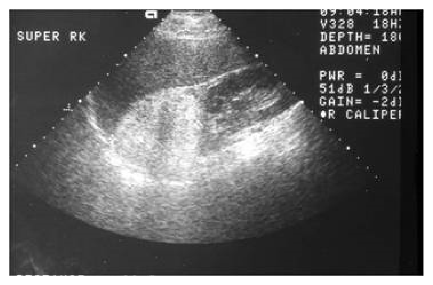
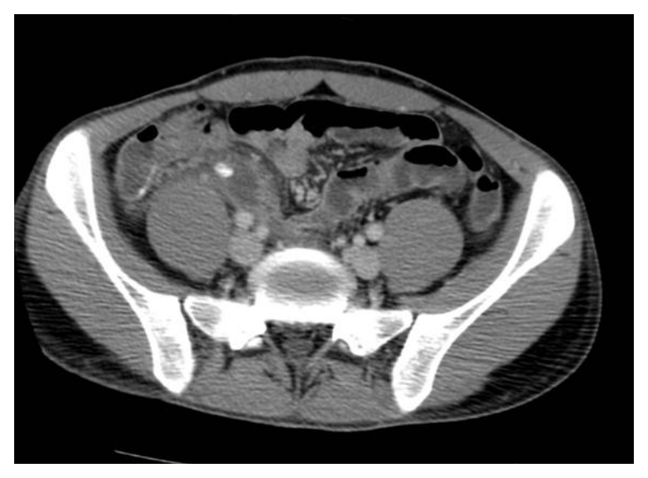

開卷有益 ／
醫師 ／ 醫學（五）（包括外科、骨科、泌尿科等科目及其相關臨床實例與醫學倫理） ／ 108 年第 1 次108 年第 1 次醫師醫學（五）（包括外科、骨科、泌尿科等科目及其相關臨床實例與醫學倫理）試題與答案
這一頁是民國 108 年第 1 次醫師醫學（五）（包括外科、骨科、泌尿科等科目及其相關臨床實例與醫學倫理）的整份歷屆試題，共 80 題，題目與標準答案出自考選部「國家考試試題及測驗式試題答案」開放資料，其中 80 題附有詳解。以下逐題列出題幹、選項與答案；要計時作答或記錄成績，請用線上練習。
考選部原始場次代碼：108030
線上作答這一科 →
全部 80 題
第 1 題
⼀位63歲男性到⾨診主訴發現⽪膚泛黃已三週，尿液呈深褐⾊，最近有灰⽩⾊⼤便，無腹部疼痛及不適，食慾稍差。此病患住院後經影像學檢查，診斷為肝⾨處膽管癌（perihilar cholangiocarcinoma），腫瘤侷限於總肝管（common hepatic duct），在Bismuth-Corlette分類是屬於？
（A） Type I（B） Type II（C） Type III（D） Type IV答案：（A）
詳解與考點 正解：肝門處膽管癌侷限於總肝管、尚未延伸到左右肝管匯合處；依 Bismuth-Corlette 分類屬 Type I，故選 A。此分類以腫瘤對肝管分叉與左右肝管延伸的範圍為核心。
B：Type II 是腫瘤已到達左右肝管匯合處，但沒有延伸進入任一側肝管；本題明示侷限於總肝管，範圍較小。
C：Type III 表示腫瘤進一步延伸至單側肝管，本題沒有這項侵犯線索。
D：Type IV 表示雙側肝管受侵犯或更廣泛的肝門部延伸，與侷限總肝管不符。
本題考點：Bismuth-Corlette classification——用於肝門處膽管癌（perihilar cholangiocarcinoma）的膽管延伸分型；Type I 侷限於總肝管且未達左右肝管匯合處。
第 2 題
外傷評分系統（Injury Severity Score, ISS）是對外傷病患嚴重度評估常⽤的評分⽅式；下列對於外傷評分系統的敘述何者錯誤？
（A） Abbreviated Injury Scale（AIS），於1971年提出，將受傷部位嚴重程度，分為從第1級（minimalseverity）⾄第6級（presumably fatal）（B） Injury Severity Score（ISS）是⼀種⽣理性評分系統（physiological scoring system）（C） ISS分數區域為1分⾄75分，minor injury是指ISS<9分（D） Glasgow Coma Scale（GCS）能評量外傷病患意識狀態，分數區域為3分⾄15分答案：（B）
詳解與考點 正解：Injury Severity Score（ISS）由解剖性傷害嚴重度計算而來，不是生理性評分系統，故錯誤的是 B。ISS 取三個不同身體區域中最高的 Abbreviated Injury Scale（AIS）分數平方後相加，用於量化多重外傷嚴重度。
A：AIS 將單一傷害嚴重度由 1 級的輕微傷至 6 級的幾乎必然致命傷分類，敘述正確。
C：ISS 的範圍為 1 至 75 分，低分可代表輕傷；此敘述符合 ISS 作為解剖性外傷嚴重度量表的基本分數概念。
D：Glasgow Coma Scale（GCS）評估意識狀態，總分為 3 至 15 分，屬臨床常用的神經學評估工具，敘述正確。
本題考點：Injury Severity Score（ISS）——解剖性（anatomical）而非生理性（physiological）外傷評分；Abbreviated Injury Scale（AIS）提供傷害嚴重度分級；Glasgow Coma Scale（GCS）評估意識。
第 3 題
對於beside surgical procedure的敘述，下列何者錯誤？
（A） bedside surgical procedure可針對選擇性的critically ill patients進⾏⼿術處理，優點為降低運輸危急病患⾄⼿術室的危險，⼿術排程安排較有彈性，並可降低醫療費⽤（B） bedside laparotomy通常應⽤於abdominal compartment syndrome，尤其當intra-abdominal pressure達到grade Ⅲ以上（21mmHg）時，可考慮做此項⼿術，以減低腹內壓（C） percutaneous dilatational tracheostomy (PDT)對於critically ill patients with prolonged mechanicalintubation，是簡單安全的⼿術，其peri-procedure mortality rate <0.1%（D） percutaneous endoscopic gastrostomy (PEG) 是針對high risk aspiration, inability to swallow, gastric outletobstruction的critically ill patients,可提供安全快速的腸道管路路徑，灌食營養品答案：（D）
詳解與考點 正解：PEG 雖可建立腸道營養路徑，卻不能以 high risk aspiration 本身當成可安全解決吸入風險的適應症；胃灌食仍可能逆流與吸入，故錯誤的是 D。是否置放 PEG 應先判斷吞嚥障礙、腸胃道功能與病人整體目標。
A：對經挑選的重症病人，床邊手術可避免高風險轉送、增加排程彈性並節省部分資源，敘述正確。
B：腹腔室症候群導致高腹內壓與器官功能障礙時，減壓性剖腹手術是可考慮的救命處置；床邊執行的可行性取決於病人狀況與資源，但概念方向正確。
C：經皮擴張氣切術（percutaneous dilatational tracheostomy, PDT）可在適當重症病人床邊施作；其圍手術死亡率的精確百分比會隨定義與觀察期間而異，不能將 <0.1% 視為固定定論。
本題考點：床邊手術（bedside surgical procedure）；經皮擴張氣切術（percutaneous dilatational tracheostomy, PDT）的風險評估；經皮內視鏡胃造口術（percutaneous endoscopic gastrostomy, PEG）不保證避免吸入（aspiration）。
第 4 題
下列何者不是⼿術部位感染（surgical site infection）的危險因⼦（risk factors）？
（A） 癌症病患接受⼿術（B） 病患是否⻑期吸菸（C） 術中是否輸⾎（D） ⼿術時間⻑短答案：（A）
詳解與考點 正解：官方答案為 A。吸菸、術中輸血與手術時間延長均為常見的手術部位感染危險因子；惟癌症診斷本身不能一概視為沒有風險，癌症相關的營養不良、免疫抑制與治療皆可能增加風險。因此本題以（A）為唯一非危險因子的分類有爭議。
B：長期吸菸會影響微循環與傷口癒合，增加手術部位感染風險。
C：術中輸血常與較大手術、失血及免疫調節等因素相關，為手術部位感染的已知危險因子之一。
D：手術時間越長，傷口暴露與組織操作時間越久，感染風險增加。
本題考點：手術部位感染（surgical site infection, SSI）；宿主危險因子與手術相關危險因子；癌症診斷與癌症相關免疫、營養狀態須分開評估。
第 5 題
急診⾯對⼀位發燒病⼈，⾎壓75/40 mmHg，⼼跳105/min，⼼功能指標（cardiac index）下降，但中央靜脈壓⼒（central venous pressure）上升，最有可能診斷為何？
（A） ⼼因性休克（B） 敗⾎性休克（C） 低⾎容積休克（D） 神經性休克答案：（A）
詳解與考點 正解：低血壓合併心功能指標（cardiac index）下降及中央靜脈壓上升；此組合代表心臟泵血失敗、血液回堵，最符合心因性休克（cardiogenic shock），故選 A。發燒可造成混淆，但血流動力學資料比單一發燒症狀更具鑑別力。
B：敗血性休克早期常呈低周邊阻力與心輸出量上升的分布性休克型態，中央靜脈壓不會典型地升高；它看似因發燒而合理，但與題幹血流動力學不合。
C：低血容積休克因靜脈回流不足，通常中央靜脈壓下降，而非上升。
D：神經性休克主要為交感神經張力喪失，常見相對心搏過緩與低血管阻力，不能典型解釋心功能指標下降合併中央靜脈壓上升。
本題考點：心因性休克（cardiogenic shock）——心輸出量／心功能指標下降，充填壓常升高；休克鑑別（shock differentiation）須綜合中央靜脈壓、心輸出量與周邊阻力。
第 6 題
器官移植是⼈類外科醫學⼀個重要突破，下列敘述何者錯誤？
（A） 歷史上最早完成的器官移植為腎臟移植（B） ⼼臟移植比肝臟移植更早完成（C） ⼤多數的胰臟移植時常會合併腎臟移植⼀起進⾏（D） 超急性排斥發⽣於移植後數⼗分鐘到數⼩時，是因為接受者體內抗體攻擊捐贈器官上的⾎型相關抗原或⼈類⽩⾎球抗原所致答案：（B）
詳解與考點 正解：器官移植的歷史先後。腎臟移植是最早成功的實體器官移植；人類首例心臟移植在肝臟移植之後才完成，因此「心臟移植比肝臟移植更早完成」的時間順序顛倒，故選 B。
A：腎臟是最早完成的實體器官移植，敘述正確，故非答案。
C：胰臟移植常用於糖尿病合併末期腎病變的病人，臨床上常與腎臟同時移植，敘述正確，故非答案。
D：超急性排斥是受者既存抗體對供者 ABO 血型抗原或 HLA 抗原的快速反應，可在移植後數分鐘至數小時內發生，敘述正確，故非答案。
本題考點：器官移植史（organ transplantation history）——腎臟移植早於心臟與肝臟移植；超急性排斥（hyperacute rejection）——既存抗體造成移植物迅速血栓與失敗。
第 7 題
⼤多數的癌症會經由淋巴管轉移（lymphatic metastasis），因此淋巴結廓清⼿術是惡性腫瘤⼿術的重要步驟。下列何種惡性腫瘤因很少有淋巴結轉移（< 5%），所以不需常規進⾏淋巴結廓清⼿術？
（A） 胃癌（B） 軟組織⾁瘤（C） ⼤腸癌（D） 胰臟癌答案：（B）
詳解與考點 正解：「很少有淋巴結轉移」而不需常規淋巴結廓清。軟組織肉瘤主要經血行轉移至肺部，區域淋巴結轉移罕見，因此通常不做常規淋巴結廓清，故選 B。
A：胃癌常循淋巴路徑擴散，淋巴結分期與廓清是根治性手術的重要部分，故不符。
C：大腸癌的區域淋巴結狀態直接影響分期與術後治療，腸段切除時須合併相應腸繫膜淋巴結廓清，故不符。
D：胰臟癌有早期淋巴結轉移傾向，根治性切除會包含區域淋巴結處理，故不符。
本題考點：腫瘤轉移途徑（metastatic routes）——多數上皮性癌以淋巴轉移為主；軟組織肉瘤（soft tissue sarcoma）多以血行轉移為主，常規淋巴結廓清通常無益。
第 8 題
⻑期禁食後再重新給與營養時，為避免造成再餵食症後群（refeeding syndrome），於早期餵食時，應注意下列那些離⼦的補充？
（A） 鉀、磷、鎂（B） 鈉、磷、鈣（C） 鉀、磷、鈣（D） 鉀、鈉、鎂答案：（A）
詳解與考點 正解：長期禁食後重新供給營養。醣類輸入會使胰島素上升，促使磷、鉀、鎂由血液移入細胞；血中這些離子因而容易下降，並可導致心律不整、肌無力與呼吸衰竭。因此早期再餵食需特別補充與監測鉀、磷、鎂，故選 A。
B：鈉與鈣並非再餵食症候群最具代表性的細胞內移入離子；此選項漏掉關鍵的鉀與鎂，故錯。
C：此選項包含鉀與磷，看似接近正解；但再餵食時同樣重要的鎂被鈣取代，無法完整處理典型電解質風險，故錯。
D：此選項有鉀與鎂，但漏掉最具代表性的低磷血症，且鈉不是核心補充項目，故錯。
本題考點：再餵食症候群（refeeding syndrome）——營養重啟後胰島素驅動鉀、磷、鎂進入細胞；低磷血症（hypophosphatemia）是最重要的典型異常。
第 9 題
下列何者較少出現在 Neurofibromatosis type I 的病⼈？
（A） 家族顯性遺傳（B） 雙側聽神經瘤（C） ⽪膚咖啡⽜奶斑（Café-au-lait macules）（D） 脊椎發育異常答案：（B）
詳解與考點 正解：神經纖維瘤病第 1 型的典型表現。雙側聽神經瘤是神經纖維瘤病第 2 型（NF2）的代表性病灶，並非 NF1 常見表現，故選 B。
A：NF1 為常染色體顯性遺傳疾病，雖可由新發突變造成，家族顯性遺傳仍是其典型遺傳型態，故非答案。
C：皮膚咖啡牛奶斑是 NF1 的常見診斷線索，故非答案。
D：脊椎側彎、椎體發育異常等骨骼病變可見於 NF1，故非答案。
本題考點：神經纖維瘤病第 1 型（neurofibromatosis type 1, NF1）——咖啡牛奶斑與骨骼發育異常常見；神經纖維瘤病第 2 型（NF2）——雙側前庭神經鞘瘤是代表性表現。
第 10 題
傳統預防腦動脈瘤破裂出⾎後的腦⾎管痙攣（cerebral vasospasm）有所謂的”Triple-H” therapy，下列何者不包含於Triple-H？
（A） hypervolemia（B） hypertension（C） hemodilution（D） hyperventilation答案：（D）
詳解與考點 正解：Triple-H 三個 H 的名稱。傳統腦動脈瘤破裂後血管痙攣處置所稱 Triple-H，指高血容量（hypervolemia）、高血壓（hypertension）與血液稀釋（hemodilution）；過度換氣（hyperventilation）不在其中，故選 D。
A：hypervolemia 是 Triple-H 的第一個 H，敘述正確，故非答案。
B：hypertension 是 Triple-H 的一部分，目的在增加腦灌流壓，敘述正確，故非答案。
C：hemodilution 是 Triple-H 的一部分，敘述正確，故非答案。
本題考點：腦血管痙攣（cerebral vasospasm）——蛛網膜下腔出血後的缺血性併發症；Triple-H therapy——hypervolemia、hypertension、hemodilution 的傳統記憶法。
第 11 題
有關腦下垂體泌乳素瘤（prolactinoma）的描述，下列何者正確？
（A） 腫瘤通常直徑⼤於3公分（B） ⾎中泌乳素（prolactin）濃度通常>150 ng/mL（C） ⼿術是第⼀線主要治療⽅法（D） 直徑<1公分通常⽤立體定位放射線⼿術（SRS）治療答案：（B）
詳解與考點 正解：泌乳素瘤的診斷與治療。泌乳素瘤會分泌大量 prolactin，血中濃度明顯升高是重要線索；本題以 >150 ng/mL 描述其典型程度，故選 B。
A：泌乳素瘤可為微腺瘤或大腺瘤，不能以「通常大於 3 公分」概括，故錯。
C：多數泌乳素瘤第一線是多巴胺致效劑（dopamine agonist），可降低泌乳素並縮小腫瘤；手術通常保留給藥物無效、不耐受或有特定壓迫情況者，故錯。
D：直徑 <1 公分的微腺瘤通常先採藥物治療，立體定位放射手術不是其常規初始治療，故錯。
本題考點：泌乳素瘤（prolactinoma）——高泌乳素血症是主要生化線索；多巴胺致效劑（dopamine agonist）——多數病人的第一線治療。
第 12 題
有關腦部神經膠質瘤（glioma）之敘述，下列何者錯誤？
（A） ⼩腦⽑細胞星形細胞瘤（pilocytic astrocytoma）主要治療⽅法為切片後放射線治療（B） 寡樹突神經膠細胞瘤（oligodendroglioma）主要治療⽅式為儘量切除後化療（C） 多形性神經膠質⺟細胞瘤（glioblastoma multiforme）為最常⾒之神經膠質瘤（D） 多形性神經膠質⺟細胞瘤（glioblastoma multiforme）治療⽅法為盡可能完全切除加上放射線治療與temozolomide化療答案：（A）
詳解與考點 正解：「何者錯誤」及小腦毛細胞星形細胞瘤的處置。毛細胞星形細胞瘤多為界限清楚、較低惡性度的腫瘤，能安全切除時以手術切除為主要治療，並非一律先切片再放射治療，故選 A。
B：寡樹突神經膠細胞瘤通常盡可能切除，後續依腫瘤特徵與風險考慮放射治療及化療；以切除合併後續藥物治療為主軸的敘述可成立，故非答案。
C：多形性神經膠質母細胞瘤是成人最常見的惡性原發性腦腫瘤，為考試常用表述，故非答案。
D：多形性神經膠質母細胞瘤以最大安全切除後合併放射治療與 temozolomide 為標準治療主軸，敘述正確，故非答案。
本題考點：毛細胞星形細胞瘤（pilocytic astrocytoma）——可切除病灶以手術為主；多形性神經膠質母細胞瘤（glioblastoma）——最大安全切除後合併放射治療與 temozolomide。
第 13 題
有關三叉神經痛的敘述，下列何者錯誤？
（A） 可能源⾃於多發性硬化症（multiple sclerosis）（B） 可能因良性或惡性腫瘤造成（C） 最常發⽣原因是superior cerebellar artery壓到三叉神經之腦幹端（D） 開腦⼿術將⾎管與神經墊開是第⼀線治療⽅式答案：（D）
詳解與考點 正解：三叉神經痛的第一線治療。典型三叉神經痛首先使用藥物治療，常用 carbamazepine 或 oxcarbazepine；微血管減壓術是藥物失敗或不耐受時的重要手術選項，不是所有病人的第一線，故選 D。
A：多發性硬化症的脫髓鞘病灶可造成次發性三叉神經痛，敘述正確，故非答案。
B：橋小腦角或三叉神經路徑的良、惡性腫瘤可造成次發性三叉神經痛，敘述正確，故非答案。
C：典型三叉神經痛最常見原因是血管壓迫三叉神經根進入區，常涉及上小腦動脈；此選項看似過於具體，但符合典型機轉，故非答案。
本題考點：三叉神經痛（trigeminal neuralgia）——常由神經血管壓迫造成；藥物治療（medical therapy）為第一線，微血管減壓術（microvascular decompression）為選擇性手術治療。
第 14 題
對於⼿部燒傷的治療，下列敘述何者錯誤？
（A） 傷⼝儘早癒合，是避免攣縮最好的⽅式（B） 需要使⽤副⽊（splint），以維持掌指關節伸展（MP joint extension）及指間關節伸展（IP jointextension）（C） 維持⼿部功能姿勢（functional position），是為了避免伸展肌腱攣縮（extensor tendon contracture）（D） 拇指應維持在外展（abduction）的位置答案：（B）
詳解與考點 正解：手部燒傷副木的抗攣縮姿勢。手部功能姿勢應使掌指關節屈曲、指間關節伸展，藉此避免關節囊與韌帶攣縮；選項把掌指關節寫成伸展，與正確抗攣縮位置相反，故選 B。
A：讓燒傷傷口儘早癒合可縮短發炎與瘢痕增生時間，是減少攣縮的基本原則，故非答案。
C：維持功能姿勢是為保存手部關節與肌腱滑動所需的長度、避免攣縮；敘述的「伸展肌腱攣縮」用語不夠精確，但核心的功能姿勢原則正確，故非答案。
D：拇指外展可維持第一指蹼空間，避免拇指內收攣縮，故非答案。
本題考點：手部燒傷復健（hand burn rehabilitation）——副木須維持抗變形姿勢；功能姿勢（functional position）——掌指關節屈曲、指間關節伸展並維持拇指外展。
第 15 題
下列何者是造成傷⼝攣縮（wound contracture）的主要細胞？
（A） T-淋巴球（T-lymphocyte）（B） B-淋巴球（B-lymphocyte）（C） 巨噬細胞（macrophage）（D） 肌纖維⺟細胞（myofibroblast）答案：（D）
詳解與考點 正解：傷口攣縮的直接效應細胞。肌纖維母細胞兼具纖維母細胞製造細胞外基質與平滑肌樣收縮能力，會牽拉傷口邊緣，因此是傷口攣縮的主要細胞，故選 D。
A：T 淋巴球參與細胞性免疫與發炎調控，但不是直接造成傷口收縮的主要細胞，故錯。
B：B 淋巴球主要參與體液性免疫與抗體生成，不是傷口攣縮的主要效應細胞，故錯。
C：巨噬細胞會清除壞死組織並分泌調控修復的介質，看似與傷口癒合密切；但直接產生收縮力的是肌纖維母細胞，故錯。
本題考點：傷口收縮（wound contraction）——由肌纖維母細胞（myofibroblast）產生收縮力；傷口癒合（wound healing）——發炎、增生與重塑階段各有不同主要細胞。
第 16 題
關於⽪膚移植（skin graft）的敘述，下列何者正確?
（A） ⾎漿浸潤（plasmatic circulation）是指在術後的72⼩時後，移植的⽪膚（grafted skin）將直接吸收養分（B） 屍⽪（cadaveric skin）覆蓋是屬於異種（xenograft）移植（C） 常⾒的⼿術失敗原因包括⾎腫、感染，但移植⽪膚因位移產⽣缺失（loss）情況並不多⾒（D） 移植⽪膚的真⽪愈厚，愈不會產⽣傷⼝疤痕攣縮（scar contracture）答案：（D）
詳解與考點 正解：皮膚移植厚度與攣縮的關係。較厚的皮膚移植物含較多真皮，術後次發性收縮較少，因此較不易形成傷口疤痕攣縮，故選 D。
A：血漿浸潤是移植初期由傷口床滲出液供應氧氣與養分的階段，發生在術後早期而非 72 小時後，故錯。
B：屍皮來自同種人類捐贈者，屬同種異體移植（allograft），不是異種移植（xenograft），故錯。
C：血腫、感染與移植物位移都會妨礙移植物與傷口床接觸；位移並非罕見且可造成移植失敗，故錯。
本題考點：皮膚移植存活（skin graft take）——早期血漿浸潤後逐步血管化；全厚度與較厚分層皮膚移植（thicker skin graft）——次發性收縮較少。
第 17 題
在處理⼀個困難的傷⼝時，我們常以肌⾁⽪瓣（muscle flap）來重建缺損，根據 Mathes & Nahai 的分類，以下敘述何者正確？
（A） 臀⼤肌（gluteus maximus）和腹直肌（rectus abdominis）⽪瓣都屬於type II（B） 闊背肌（latissimus dorsi）由單⼀⾎管莖供應，屬於type I（C） 適合取較⼤肌⾁來重建缺損的是屬於type I、III、V（D） 股薄肌（gracilis）是屬於type IV，所以只能取⼀⼩部分肌⾁來重建缺損答案：（C）
詳解與考點 正解：Mathes & Nahai 肌肉血管莖分類與可取肌肉量。type I 有單一主要血管莖、type III 有兩個主要血管莖、type V 有一個主要血管莖加次要血管莖，血供較可靠，適合設計較大肌肉皮瓣重建缺損，故選 C。
A：臀大肌屬 type III，腹直肌屬 type III，兩者不是 type II，故錯。
B：闊背肌確有主要胸背血管供應，但另有次要節段性血管供應，分類為 type V；把它說成單一血管莖的 type I 錯誤。
D：股薄肌屬 type II，具有一個主要血管莖及次要血管莖，並非 type IV；其分類錯誤，故錯。
本題考點：Mathes & Nahai 分類（Mathes and Nahai classification）——依肌肉血管莖數目與型態分類；肌肉皮瓣（muscle flap）——血供型態決定皮瓣設計與可安全移轉範圍。
第 18 題
關於各種不同的⽣物⼯程⽪膚替代物（bioengineered skin substitutes）的優點與缺點，下列敘述何者錯誤？
（A） 培養的異體⾓質細胞（allogeneic keratinocyte graft）有傷⼝覆蓋與促進癒合的優點（B） 培養的異體⾓質細胞（allogeneic keratinocyte graft）缺點是脆弱且無法避免傷⼝攣縮（C） ⽣物⼯程真⽪替代物（bioengineered dermal replacement）⼤部分只能當作暫時性的傷⼝覆蓋（D） ⽣物⼯程真⽪替代物（bioengineered dermal replacement）優點是具有優異的引導上⽪化（re-epithelialization）的能⼒答案：（D）
詳解與考點 正解：生物工程真皮替代物的主要功能。真皮替代物提供真皮樣支架、改善傷口床與降低攣縮，通常需待血管化後再覆蓋表皮；直接引導上皮化並非其主要優勢，因此 D 的敘述錯誤，故選 D。
A：培養的異體角質細胞可作為暫時性生物性覆蓋，並藉分泌生長因子協助傷口癒合，敘述正確，故非答案。
B：培養的異體角質細胞較脆弱，且不能提供足夠真皮支架以完全防止攣縮，敘述正確，故非答案。
C：多數生物工程真皮替代物本身不含持久表皮覆蓋，常先作為暫時性覆蓋或真皮再生模板，之後仍須處理表皮覆蓋，故非答案。
本題考點：生物工程皮膚替代物（bioengineered skin substitutes）——可分表皮、真皮與複合型替代物；真皮替代物（dermal replacement）——重點在真皮支架與減少攣縮，不是直接上皮化。
第 19 題
有關兔唇顎裂（cleft lip and palate）的敘述，下列何者錯誤？
（A） 兔唇顎裂是最常⾒的顏⾯先天異常（anomaly）（B） 發⽣的原因有家族病史傾向，跟懷孕期間使⽤藥物、感染或吸菸也有關（C） 嚴重完整型唇顎裂（complete cleft lip/palate）可能導致吸入性肺炎，所以應該提早於3～6周進⾏⼿術（D） 顎裂矯正⼿術的併發症最常⾒的是瘻管（fistula），其次是無法完全矯正語⾔發⾳和腭咽不全（velopharyngeal insufficiency）答案：（C）
詳解與考點 正解：唇顎裂修補時機。完整型唇顎裂會影響哺餵，但可先以餵食姿勢、奶嘴與營養支持處理；唇裂修補與顎裂修補各有兼顧生長、麻醉安全與語音發展的時程，不能因吸入風險就概括為 3～6 周提早手術，因此 C 錯誤，故選 C。
A：唇顎裂是常見的顏面先天異常，敘述正確，故非答案。
B：唇顎裂具多因子成因，家族傾向及孕期藥物暴露、感染、吸菸等環境因素都可相關，故非答案。
D：顎裂修補後可出現瘻管及腭咽閉鎖功能不足，並影響語音；此選項看似過度絕對，但所列為重要且常見的術後問題，故非答案。
本題考點：唇顎裂（cleft lip and palate）——多因子先天顏面異常；顎裂修補（palatoplasty）——時機須平衡營養、顏面生長與語音發展，術後留意瘻管與腭咽功能不全。
第 20 題
根據美國⼼臟協會（American Heart Association）及美國⼼臟學院（American College of Cardiology）對冠狀動脈繞道⼿術之指引，下列何種狀況下接受冠狀動脈繞道⼿術，對延⻑壽命⽽⾔不是第⼀級建議（class Irecommendation）？
（A） 僅單純⼀條嚴重阻塞（⼤於75%）且發⽣在左前降冠狀動脈近端（LAD proximal）區域（B） 左主幹冠狀動脈（left main）嚴重阻塞（⼤於60%）（C） 三條⾎管阻塞合併有左前降冠狀動脈近端（LAD proximal）嚴重阻塞（⼤於75%）（D） ⼆條⾎管阻塞包括左前降冠狀動脈近端（LAD proximal）嚴重阻塞（⼤於75%）答案：（A）
詳解與考點 正解：題目所稱指引中「延長壽命」的第一級冠狀動脈繞道手術建議。官方答案為 A；惟冠狀動脈血運重建建議會隨年代、解剖複雜度、左心室功能與藥物治療而調整，不能把單純近端 LAD 病變一概視為具明確存活效益的第一級適應症。相較左主幹或複雜多血管病變，A 最不符合題目所問，故選 A。
B：左主幹嚴重狹窄的血運重建與預後密切相關，是傳統具有明確存活效益的情境，故非答案。
C：三條血管病變合併近端 LAD 嚴重狹窄代表較廣泛缺血風險，傳統分類中屬支持繞道手術改善預後的情境，故非答案。
D：二條血管病變含近端 LAD 嚴重狹窄，在較早期指引分類中可列為支持繞道手術的情境；它看似與 A 相近，但多血管病變的解剖風險較高，故非答案。
本題考點：冠狀動脈繞道手術（coronary artery bypass grafting, CABG）——是否改善存活須看左主幹、多血管病變、近端 LAD 與左心室功能；血運重建指引（revascularization guideline）——建議等級具時效性，需依當代證據判讀。
第 21 題
下列有關急性主動脈剝離（aortic dissection）之描述，何者正確？
（A） 急性主動脈剝離最佳診斷⼯具是⼼臟超⾳波（cardiac echocardiography）或是核磁共振攝影（magneticresonance imaging）（B） 急性主動脈剝離發⽣的機制⼤都是內膜層有⼀個破⼝（intimal tear），通常是在主動脈壁外層（adventitia）及中層（media）中間形成⼀假腔（false lumen）（C） 發⽣急性主動脈剝離最常⾒的症狀為胸痛，非常類似冠狀動脈疾病的壓迫性胸痛，⼆者並不容易區別（D） 發⽣急性主動脈剝離的病⼈，⼤多都以胸痛為主要症狀，並不會引起其他器官的⾎流不⾜（malperfusion）答案：（B）
詳解與考點 正解：急性主動脈剝離的病理機轉。內膜破口使血液進入主動脈壁中層，將中層剝離而形成假腔；選項 B 雖將假腔描述為位於外膜與中層之間不夠精確，但在四個選項中最符合內膜破口與假腔形成的核心機轉，故選 B。
A：急性主動脈症候群需快速取得高診斷效能的影像，臨床常以電腦斷層血管攝影為主；核磁共振耗時較長，經胸心臟超音波也非所有病例最佳工具，故錯。
C：主動脈剝離常為突發、劇烈、撕裂樣或向背部放射的胸痛，與典型冠心症壓迫痛仍有重要臨床差異，故錯。
D：剝離可阻塞分支血管並造成腦、腎、腸或肢體灌流不足，malperfusion 是重要併發症，故錯。
本題考點：急性主動脈剝離（acute aortic dissection）——內膜破口後血液進入主動脈中層形成假腔；器官低灌流（malperfusion）——分支血管受累的重要併發症。
第 22 題
動脈瘤形成的危險因素不包括下列何者？
（A） ⾼年齡（B） 男性（C） ⾼⾎脂（D） 糖尿病本題送分，無標準答案
詳解與考點 本題官方公告送分。
第 23 題
有關⼼臟瓣膜⼿術後，服⽤抗凝⾎劑（warfarin）下列何者錯誤？
（A） 機械性瓣膜（mechanical valve）置換後，建議需⻑期服⽤抗凝⾎劑（B） 作⽤於凝⾎瀑狀途徑（coagulation cascade factor II,VII, IX, X）（C） 可以經凝⾎酶原時間（prothrombin time）或國際標準化比值（international normalized ratio, INR）監測，追蹤調整使⽤劑量（D） 機械性瓣膜（mechanical valve）置換後，調整藥物劑量使國際標準化比值（international normalized ratio,INR）於正常值即可答案：（D）
詳解與考點 正解：機械瓣膜置換後 warfarin 的監測目標。機械瓣膜血栓風險高，INR 必須依瓣膜位置與血栓風險維持在治療範圍，而非「正常值」；正常 INR 不足以提供所需抗凝，故 D 錯誤。
A：機械性瓣膜通常需要長期 warfarin 抗凝以預防瓣膜血栓與栓塞，敘述正確，故非答案。
B：warfarin 抑制維生素 K 相關凝血因子 II、VII、IX、X 的生成，敘述正確，故非答案。
C：warfarin 的效果以 prothrombin time/INR 監測並據以調整劑量，敘述正確，故非答案。
本題考點：warfarin——抑制維生素 K 依賴性凝血因子（vitamin K-dependent clotting factors）；機械性心臟瓣膜（mechanical heart valve）——需以 INR 維持治療性抗凝，而非正常 INR。
第 24 題
下列情況何者可以暫不考慮放置下腔靜脈過濾器（vena cava filter）？
（A） ⾸次急性之肺動脈栓塞（B） 深部靜脈栓塞，且不適合使⽤抗凝⾎劑（C） 深部靜脈栓塞，且有慢性肺栓塞，並已造成肺⾼壓（D） 在⾜量之抗凝⾎劑治療下，仍反復多次靜脈栓塞答案：（A）
詳解與考點 正解：下腔靜脈過濾器的適應症。首次急性肺動脈栓塞若可使用抗凝血劑，標準治療是抗凝，並不需要常規放置下腔靜脈過濾器，故可暫不考慮的是 A。
B：深部靜脈栓塞且有抗凝禁忌時，無法以標準抗凝預防肺栓塞，為考慮過濾器的典型情境，故非答案。
C：慢性肺栓塞已造成肺高壓時，再發栓塞的後果嚴重；是否置放仍須個別判斷，但不是題目所稱可直接暫不考慮的情境，故非答案。
D：足量抗凝下仍反覆發生靜脈栓塞，代表治療失敗或持續高風險，是考慮過濾器的情境，故非答案。
本題考點：下腔靜脈過濾器（inferior vena cava filter）——主要用於抗凝禁忌或足量抗凝仍復發的靜脈血栓栓塞；靜脈血栓栓塞（venous thromboembolism）——可抗凝者通常以抗凝為標準治療。
第 25 題
對周邊⾎管阻塞的治療，下列何者並不適當？
（A） 照光（phototherapy）（B） 控制⾼⾎壓，給與⼄型阻斷劑（C） 控制糖尿病（D） 以導管⽅式打通⾎管答案：（A）
詳解與考點 正解：周邊血管阻塞的有效治療原則。治療重點是控制動脈粥樣硬化危險因子、運動與藥物治療，必要時以血管內或手術方式重建血流；照光（phototherapy）不能解除血管狹窄或改善灌流，故選 A。
B：控制高血壓是周邊動脈疾病風險管理的一部分；乙型阻斷劑雖可能被誤以為會惡化周邊灌流，但在有適應症時並非禁忌，故此項不是最不適當。
C：糖尿病會加速周邊動脈疾病並增加潰瘍與截肢風險，控制血糖是重要治療，故非答案。
D：血管內介入可在適當解剖病灶中恢復血流，是血運重建選項之一，故非答案。
本題考點：周邊動脈疾病（peripheral artery disease）——控制血壓、糖尿病與其他危險因子；血運重建（revascularization）——可採血管內介入或手術，照光不是標準治療。
第 26 題
關於肋膜積液（pleural effusion）的敘述，下列何者正確？
（A） 漏出液（transudate）常在肺炎或病毒感染時發⽣（B） 滲出液（exudate）通常是清澈，蛋⽩質含量較低的液體（C） 滲出液（exudate）是肋膜液的LDH 比上⾎清的LDH比值⼩於0.6（D） 若因肺炎產⽣之肋膜積液，此液體之葡萄糖濃度通常下降，且⼩於60mg/dL答案：（D）
詳解與考點 正解：肺炎相關肋膜積液，這類感染性肋膜積液屬滲出液，發炎細胞與細菌代謝會消耗葡萄糖，故肋膜液葡萄糖常下降；當低於60 mg/dL時尤其支持複雜性肺炎旁積液或膿胸的可能，故選 D。
A：肺炎或病毒感染造成的是肋膜發炎所致的滲出液，不是由靜水壓或膠體滲透壓失衡形成的漏出液；漏出液較常見於心衰竭、肝硬化或腎病症候群。
B：滲出液因發炎使血管通透性增加，蛋白質與 LDH 較高；「清澈、蛋白質較低」是漏出液較相符的描述。
C：Light 判準中，肋膜液 LDH／血清 LDH 比值大於0.6才支持滲出液；小於0.6反而不符合此一滲出液條件。
本題考點：肋膜積液分類（pleural effusion classification）——漏出液由全身性壓力失衡造成，滲出液多由局部發炎或惡性病變造成；Light criteria——肋膜液／血清 LDH 比值大於0.6是滲出液條件之一；肺炎旁積液（parapneumonic effusion）——低葡萄糖提示較嚴重的肋膜腔感染。
第 27 題
下列何者不是創傷初級評估中，會有立即⽣命危險之傷害？
（A） ⼼包膜填塞症（cardiac tamponade）（B） ⾃發性氣胸（spontaneous pneumothorax）（C） 氣道阻塞（airway obstruction）（D） 連枷胸（flail chest）併肺挫傷（pulmonary contusion）答案：（B）
詳解與考點 正解：創傷初級評估中「立即生命危險」的傷害。初級評估依序處理氣道、呼吸與循環的立刻致命問題；自發性氣胸雖可能造成胸痛與呼吸困難，但未必是創傷初級評估所稱須立即排除的致命胸傷，故選 B。若進展為張力性氣胸，才會因阻塞性休克成為立即致命狀況。
A：心包膜填塞會限制心室舒張與心輸出量，造成阻塞性休克，屬循環評估時須立即辨識並處置的致命傷害。
C：氣道阻塞可使病人迅速缺氧，正是初級評估最先處理的 A（airway）問題，屬立即生命危險。
D：連枷胸合併肺挫傷可造成無效通氣、低氧血症及呼吸衰竭，屬呼吸評估時的重要立即致命胸部傷害。
本題考點：創傷初級評估（primary survey）——以 ABCDE 優先處置立即致命問題；致命胸部創傷（life-threatening thoracic injury）——氣道阻塞、心包膜填塞與嚴重胸壁或肺實質損傷需在初級評估階段辨識。
第 28 題
肺癌⼿術後最常⾒的死亡原因為何？
（A） 肺炎合併敗⾎症（pneumonia with sepsis）（B） ⼼律不整（arrhythmia）（C） 腎臟衰竭（renal failure）（D） 中風（stroke）答案：（A）
詳解與考點 正解：肺癌手術後「最常見的死亡原因」。肺切除後最常見且可致死的重大併發症來自呼吸道感染進展為肺炎與敗血症；術後疼痛、咳痰無力及肺容量減少均會增加此風險，故選 A。
B：心律不整，特別是心房顫動，確是肺切除後常見併發症，但通常可監測及治療，並非本題所問最常見死亡原因。它看似合理，是因胸腔手術確會增加心律不整，但「常見併發症」不等於「最常見死因」。
C：腎臟衰竭可在休克、敗血症或腎毒性暴露下發生，並非肺癌手術後最典型的死亡原因。
D：中風是圍手術期可能發生但相對少見的血管性事件，無法與術後肺炎合併敗血症相比。
本題考點：肺切除術後併發症（postoperative complications after lung resection）——應重視肺不張、肺炎與呼吸衰竭；術後肺炎（postoperative pneumonia）——可進一步導致敗血症並造成死亡。
第 29 題
處理縱膈腔⽣殖細胞瘤，抽⾎檢查胎兒球蛋⽩（alpha fetal protein）及絨⽑膜激素（beta-HCG），下列之敘述何者錯誤？
（A） 精原細胞瘤（seminoma）的⾎清胎兒球蛋⽩及絨⽑膜激素指數顯著昇⾼（B） 此⼆項檢查可作為精原細胞瘤（seminoma）及非精原細胞瘤（nonseminomatous germ cell tumor）的鑑別診斷根據（C） 此⼆項檢查可評估化學治療的效果（D） 定期偵測此⼆項指數可早期發現腫瘤的復發答案：（A）
詳解與考點 正解：要找錯誤敘述。精原細胞瘤可有 beta-HCG 上升，但不應造成 AFP 上升；若血清 AFP 升高，臨床上應視為存在非精原細胞性成分，而非純精原細胞瘤。因此（A）稱 AFP 與 beta-HCG 都顯著升高不正確，故選 A。
B：AFP 與 beta-HCG 的型態有助於區分精原細胞瘤與非精原細胞性生殖細胞瘤；尤其 AFP 上升支持非精原細胞性成分，故敘述正確而非答案。
C：腫瘤標記濃度可隨有效治療下降，故可配合影像與臨床狀況評估化學治療反應，敘述正確而非答案。
D：治療後規律追蹤腫瘤標記可協助早期察覺復發；不能只靠標記確診，但作為追蹤工具的敘述正確。
本題考點：生殖細胞瘤腫瘤標記（germ cell tumor markers）——AFP 上升不符合純精原細胞瘤；beta-HCG 可在部分精原細胞瘤上升；腫瘤標記可用於分型、療效及復發追蹤。
第 30 題
52歲的陳先⽣因肺癌作右下肺葉切除後，術後照顧時需注意的最常⾒併發症是：
（A） 痰積存導致肺泡萎陷（atelectasis）（B） ⽪下氣腫（subcutaneous emphysema）（C） 膿胸（empyema）（D） ⽀氣管胸膜腔瘻管（bronchopleural fistula）答案：（A）
詳解與考點 正解：肺葉切除後最常見的術後併發症。術後疼痛使深呼吸與咳嗽不足，加上分泌物滯留，最容易造成小氣道阻塞及肺泡塌陷，即肺不張（atelectasis），故選 A。
B：皮下氣腫可因持續漏氣或胸管問題出現，但不是例行術後最常見併發症。
C：膿胸是肋膜腔感染，屬較嚴重但相對不常見的併發症，常需抗生素與引流處理。
D：支氣管胸膜瘻管會造成持續漏氣、感染或呼吸惡化，是嚴重併發症，卻遠不如肺不張常見。
本題考點：肺葉切除術後照護（post-lobectomy care）——疼痛控制、有效咳嗽、深呼吸與早期下床可降低分泌物滯留；肺不張（atelectasis）——是胸腔手術後常見的早期肺部併發症。
第 31 題
胃底折疊術（fundoplication）不是下列那⼀個疾病⼿術中的⼀個術式？
（A） 食管裂孔疝氣（hiatal hernia）（B） 胃食道逆流（gastro-esophageal reflux）（C） ⾎管環（vascular ring）（D） 賁⾨弛緩不能症（achalasia）答案：（C）
詳解與考點 正解：fundoplication 不屬於何種疾病的術式。胃底折疊術以胃底包繞遠端食道，目的在重建抗逆流屏障；血管環是主動脈弓及其分支的先天血管異常，治療重點為解除血管對氣管或食道的壓迫，並非胃底折疊，故選 C。
A：食管裂孔疝氣若合併逆流，修補食道裂孔後常合併 fundoplication 以降低術後逆流，故敘述所指手術關聯正確。
B：胃食道逆流的抗逆流手術即包含 fundoplication，最直接符合此術式的用途。
D：賁門弛緩不能症接受 Heller 肌切開術後，常加作部分 fundoplication 以減少肌切開後的胃食道逆流；它看似與逆流手術不同，卻可作為肌切開的輔助術式。
本題考點：胃底折疊術（fundoplication）——用於重建抗逆流屏障；食道裂孔疝氣（hiatal hernia）與胃食道逆流（gastroesophageal reflux disease）——常見抗逆流手術適應症；血管環（vascular ring）——治療為血管減壓或重建。
第 32 題
關於Zollinger-Ellison syndrome的敘述，下列何者錯誤？
（A） 病因為胃泌細胞瘤（gastrinoma）⼤量分泌胃泌激素後，造成胃酸分泌過量（B） 70～90%的腫瘤會分布於總膽管、胃與胰臟頸及胰臟體之間（C） 必須排除有無第⼀型多發性內分泌腫瘤症候群（MEN I）的可能，因為有四分之⼀的患者會合併有MEN I，只單純治療胃泌細胞瘤（gastrinoma）並不周全（D） 病⼈會有淋巴及肝臟轉移之風險，所以應將這個腫瘤視為惡性腫瘤答案：（B）
詳解與考點 正解：Zollinger-Ellison syndrome 的錯誤敘述。胃泌素瘤常位於 gastrinoma triangle，其三個界限為膽囊管與總膽管交會處、十二指腸第 2 與第 3 部交界、胰頸與胰體交界；（B）卻以胃取代十二指腸界限，且膽道界限表述不精確，故選 B。
A：胃泌素瘤分泌過多胃泌素（gastrin），會刺激胃酸大量分泌，造成反覆或難治性消化性潰瘍，敘述正確而非答案。
C：Zollinger-Ellison syndrome 可與第一型多發性內分泌腫瘤症候群相關，評估時須注意是否合併其他內分泌腫瘤，敘述方向正確而非答案。
D：胃泌素瘤具有淋巴結及肝臟轉移的可能，應以具惡性潛能的腫瘤看待，敘述正確而非答案。
本題考點：Zollinger-Ellison syndrome；胃泌素瘤（gastrinoma）；gastrinoma triangle 的解剖界限；多發性內分泌腫瘤症候群第 1 型（multiple endocrine neoplasia type 1）。
第 33 題
下列關於脾臟⼿術的敘述何者錯誤？
（A） 由於脾臟為造⾎系統及免疫系統的⼀環，最常需要進⾏脾臟切除的原因是因為紫斑症（idiopathicthrombocytopenic purpura）（B） 紫斑症於脾臟切除⼿術後的預後極佳，對於患者⽽⾔，是最具時間效率的⼀項治療（C） ⼿術前⼀週應該要接受肺炎鏈球菌疫苗注射，因為有⼩於5%的病患會於脾臟切除⼿術術後嚴重感染（overwhelming postsplenectomy infection）（D） 脾臟⼿術後常⾒的併發症為肺部塌陷、出⾎及胰臟發炎答案：（A）
詳解與考點 正解：官方答案為 A；（A）把紫斑症描述成最常需要脾切除的原因過度概括，脾切除適應症須依外傷、血液疾病、腫瘤與脾臟病變等情境判斷。惟（C）的選擇性脾切除疫苗時點通常應盡可能至少提前 14 天完成，其「術前一週」亦有實質瑕疵，故本題答案唯一性有爭議。
B：對適當篩選、藥物治療無效的免疫性血小板低下症病人，脾切除可帶來持久反應；但仍須衡量手術與感染風險。
C：脾切除前應完成對莢膜菌的疫苗預防，以降低脾切除後嚴重感染風險；選擇性手術應盡可能至少於術前 14 天完成疫苗接種，因此（C）的術前一週時點不精確。
D：脾臟鄰近胰尾與左上腹血管，術後可有肺不張、出血與胰臟相關併發症，敘述正確而非答案。
本題考點：脾切除術（splenectomy）；免疫性血小板低下症（immune thrombocytopenia）；脾切除後嚴重感染（overwhelming post-splenectomy infection）與疫苗預防。
第 34 題
肝臟⼿術中，常⽤pringle maneuver來控制並減少出⾎量，下列何結構並未包含在其中？
（A） common hepatic artery（B） portal vein（C） common bile duct（D） hepatic artery proper答案：（A）
詳解與考點 正解：Pringle maneuver 夾閉的結構。此操作暫時夾住肝十二指腸韌帶內的 portal triad，即門靜脈、肝動脈 proper 與膽管；common hepatic artery 位於此三聯體近端，並未被直接包含，故選 A。
B：portal vein 是肝十二指腸韌帶內 portal triad 的主要成員，Pringle maneuver 會阻斷其入肝血流，故非答案。
C：common bile duct 為 portal triad 成員之一，亦在夾閉範圍內，故非答案。
D：hepatic artery proper 是入肝動脈供應的一部分，位於 portal triad 內，會被 Pringle maneuver 暫時控制，故非答案。
本題考點：Pringle maneuver——暫時夾閉肝十二指腸韌帶以控制肝臟流入血；門脈三聯體（portal triad）——包括門靜脈、肝動脈 proper 與膽管；肝切除止血（hepatic inflow control）——可辨別流入血與肝靜脈或下腔靜脈等流出血來源。
第 35 題
神經內分泌腫瘤發⽣肝轉移時，下列那⼀個情況最不適合選擇肝臟切除⼿術？
（A） 可切除95%以上的肝臟腫瘤體積（B） ⻑效體抑素作⽤類似物（long-acting somatostatin analogues）治療無效（C） 有明顯神經內分泌症狀（D） 病⼈的肝功能為Child-Pugh class B答案：（D）
詳解與考點 正解：神經內分泌腫瘤肝轉移時，何者最不適合肝切除。Child-Pugh class B 代表已有顯著肝功能保留能力下降，肝切除後肝衰竭風險較高，故通常不宜將肝切除作為優先選項，故選 D。
A：若可切除絕大多數肝臟腫瘤體積，減積手術可減少腫瘤負荷與荷爾蒙相關症狀，是可考慮手術的條件。
B：長效體抑素類似物治療無效代表內科症狀控制不足；若病灶可切除且肝功能允許，可促成考慮局部治療，非絕對不適合手術。
C：明顯神經內分泌症狀常源於荷爾蒙分泌，成功減積可改善症狀，因此反而是評估手術效益的重要理由。
本題考點：神經內分泌腫瘤肝轉移（neuroendocrine tumor liver metastases）——手術需同時評估可切除性、症狀及肝功能；Child-Pugh classification——用於評估慢性肝病的肝功能保留與手術風險；腫瘤減積術（cytoreductive surgery）——可在適當病人改善腫瘤負荷與功能性症狀。
第 36 題
有關急性膽囊炎及Murphy sign，下列敘述何者正確？①急性膽囊炎常合併黃疸現象 ②為急性膽囊炎的pathognomonic sign③深度按壓右胸下的上腹部時，會讓深吸氣突然停⽌ ④深度按壓右胸下的上腹部時，會讓深呼氣突然停⽌⑤急性膽囊炎⼤部分可藉由保守性非⼿術療法獲得緩解
（A） ①②③（B） ①②④（C） ②③⑤（D） ②④⑤答案：（C）
詳解與考點 正解：官方答案為 C。此組合包含②③⑤：Murphy sign 是按壓右上腹膽囊區時，病人深吸氣因疼痛突然中止，故③正確；多數急性膽囊炎可先以禁食、輸液、止痛與抗生素等保守措施穩定，故⑤正確。惟②將 Murphy sign 稱為 pathognomonic sign 有術語爭點：它是急性膽囊炎的典型臨床徵象，但並非單憑此徵象即可排除其他診斷的絕對特異徵象；官方答案納入②，故依官方答案選 C。
A：此組合含①。急性膽囊炎通常不會明顯黃疸；若有黃疸，應考慮總膽管結石、膽管炎或其他膽道阻塞，因此①不正確。
B：此組合同時含①與④。①的黃疸判斷不對；Murphy sign 是在吸氣時觸發疼痛而中止深吸氣，不是使深呼氣停止，故④亦錯。
D：此組合含④，而④把吸氣中止誤寫成呼氣中止，故不能成立。
本題考點：急性膽囊炎（acute cholecystitis）——常以右上腹痛、發燒與局部壓痛表現；Murphy sign——吸氣時膽囊下移碰觸壓痛處而使吸氣中斷；保守治療（conservative management）——可用於初期穩定與手術前處置。
第 37 題
下列何種胰臟囊狀病灶（pancreatic cystic lesion）好發於女性？①漿液性囊狀腺瘤（serouscystadenoma） ②胰管內乳突黏液性腫瘤（intraductal papillary mucinous tumor） ③實體偽乳突腫瘤（solid-pseudopapillary tumor） ④黏液性囊狀腺瘤（mucinous cystic neoplasm） ⑤假性囊腫（pseudocyst）
（A） ①②④（B） ①③④（C） ①④⑤（D） ②③⑤答案：（B）
詳解與考點 正解：好發於女性的胰臟囊狀病灶。漿液性囊狀腺瘤、實體偽乳突腫瘤及黏液性囊狀腫瘤均有明顯女性偏好，因此正確組合為①③④，即選 B。
A：此組合納入②胰管內乳突黏液性腫瘤。IPMN 可發生於兩性，並非典型女性偏好的病灶，且漏掉③實體偽乳突腫瘤，故錯。
C：此組合納入⑤假性囊腫。假性囊腫多與急性或慢性胰臟炎、外傷相關，沒有典型女性好發性，故錯。
D：此組合包含②與⑤，兩者皆不是典型女性好發病灶，且漏掉①與④，故錯。
本題考點：漿液性囊狀腺瘤（serous cystadenoma）——較常見於女性；實體偽乳突腫瘤（solid-pseudopapillary tumor）——典型發生於年輕女性；黏液性囊狀腫瘤（mucinous cystic neoplasm）——多見於女性且常位於胰體尾。
第 38 題
下列關於medullary thyroid carcinoma的敘述，何者錯誤？
（A） 源⾃於parafollicular或C cells（B） 約80%的medullary carcinoma與MEN 2A或MEN 2B有關（C） 可分泌calcitonin，亦可能分泌carcinoembryonic antigen（CEA）（D） 若同時合併pheochromocytoma，則必須先處理pheochromocytoma答案：（B）
詳解與考點 正解：髓樣甲狀腺癌與 MEN 的關係。大多數 medullary thyroid carcinoma 是散發性，只有一部分為遺傳性並與 MEN 2A、MEN 2B 或家族性型態相關；（B）稱約80%與 MEN 2A 或 MEN 2B 有關，比例及範圍都明顯錯誤，故選 B。
A：髓樣甲狀腺癌起源於濾泡旁細胞，即 C cells，敘述正確而非答案。
C：C cells 可分泌 calcitonin，且 CEA 可作為輔助腫瘤標記，兩者可用於追蹤，敘述正確而非答案。
D：若合併 pheochromocytoma，須先處理嗜鉻細胞瘤，避免甲狀腺手術麻醉或操作誘發兒茶酚胺危象，敘述正確而非答案。
本題考點：髓樣甲狀腺癌（medullary thyroid carcinoma）——源自 C cells，散發型較常見；多發性內分泌腫瘤第2型（multiple endocrine neoplasia type 2）——可合併髓樣甲狀腺癌與嗜鉻細胞瘤；calcitonin——可作為髓樣甲狀腺癌的腫瘤標記。
第 39 題
48歲男性，患有multiple endocrine neoplasia type 1（MEN type 1） 合併hyperparathyroidism，於10年前接受副甲狀腺切除⼿術，之後⾎鈣及iPTH皆正常，惟最近追蹤抽⾎檢查顯⽰：iPTH為132 pg/mL，⾎鈣為10.8mg/dL，則最適宜的診斷為：
（A） secondary hyperparathyroidism（B） tertiary hyperparathyroidism（C） persistent hyperparathyroidism（D） recurrent hyperparathyroidism答案：（D）
詳解與考點 正解：副甲狀腺切除後曾有長期正常血鈣與 iPTH，10 年後才再度出現高血鈣合併 iPTH 升高。術後先恢復正常、經一段無病期後重新發生的高副甲狀腺功能，定義為 recurrent hyperparathyroidism，故選 D。MEN 1 的多腺體病變也使日後再發風險較高。
A：secondary hyperparathyroidism 是慢性低血鈣刺激下的代償性 PTH 上升，常見於慢性腎病；本題血鈣升高，型態不符。
B：tertiary hyperparathyroidism 是長期次發性高副甲狀腺功能後轉為自主分泌，通常有長期腎病等背景，本題未呈現該病程。
C：persistent hyperparathyroidism 指手術後未曾恢復正常的持續高鈣或 PTH 異常；本題術後已正常多年，故不是 persistent。
本題考點：持續性高副甲狀腺功能（persistent hyperparathyroidism）——術後未達正常；復發性高副甲狀腺功能（recurrent hyperparathyroidism）——正常一段時間後再次發病；MEN 1——常有多腺體副甲狀腺病變。
第 40 題
下列關於thyroid storm治療的敘述，何者錯誤？
（A） Lugol's iodine含有⼤量的碘，應避免使⽤（B） ß-blockers可減少peripheral T4 to T3 conversion（C） propylthiouracil（PTU）可減少peripheral conversion of T4 to T3（D） 應給予氧氣及靜脈輸液補充答案：（A）
詳解與考點 正解：thyroid storm 的錯誤治療敘述。Lugol's iodine 並非一概避免；在先給予抑制甲狀腺素合成的藥物後，碘劑可抑制甲狀腺素釋放，因此是治療的一環。（A）說應避免使用錯誤，故選 A。
B：部分 beta-blockers，尤其 propranolol，可減少周邊 T4 轉換為 T3，並控制心搏過速與交感症狀，敘述正確而非答案。
C：PTU 同時抑制甲狀腺素合成及周邊 T4 轉換為 T3，故敘述正確而非答案。
D：thyroid storm 可伴發燒、脫水與高代謝耗損，給予氧氣與靜脈輸液是重要支持性治療，敘述正確而非答案。
本題考點：甲狀腺風暴（thyroid storm）——需同時抑制合成、抑制釋放、阻斷周邊轉換與支持治療；Lugol's iodine——應在抗甲狀腺藥物之後使用以抑制激素釋放；propylthiouracil, PTU——可抑制周邊 T4-to-T3 conversion。
第 41 題
乳房原位癌患者必須接受全乳房切除，下列何者除外？
（A） ⾸次局部乳房切除無法有乾淨邊緣（clear margin）（B） 瀰漫性乳管內鈣化點（C） 患者強烈無意願保留乳房（D） 患者無法接受放射線治療答案：（A）
詳解與考點 正解：乳房原位癌何者「不一定必須」全乳房切除。首次局部切除邊緣不乾淨時，通常可先考慮再次局部切除以取得清楚邊緣，並非必然立刻全乳房切除，故選 A。
B：瀰漫性乳管內鈣化常代表病灶範圍廣，難以在保留乳房下完整切除並取得良好美容結果，常是全乳房切除的合理情境。
C：病人明確不願保留乳房時，在充分知情後可選擇全乳房切除，故非答案。
D：保留乳房手術通常需配合術後放射線治療；若無法接受放射治療，便不適合標準保乳策略，常需考慮全乳房切除，故非答案。
本題考點：乳房原位癌（carcinoma in situ of the breast）——可依病灶範圍與病人偏好選保乳或全乳房切除；切除邊緣（surgical margin）——初次邊緣陽性可考慮再次切除；乳房保留治療（breast-conserving therapy）——通常需配合放射線治療。
第 42 題
比較同⼀期別的乳癌，下列何種乳癌組織型態預後最好？
（A） medullary carcinoma（B） mucinous carcinoma（C） metaplastic carcinoma（D） infiltrating ductal carcinoma答案：（B）
詳解與考點 正解：同一期別下比較組織型態的預後。mucinous carcinoma 通常為分化較佳、較常見於高齡病人且淋巴結轉移較少的特殊型乳癌，因此整體預後優於一般浸潤性導管癌及題列其他型態，故選 B。
A：medullary carcinoma 的預後可較某些高分級乳癌佳，但不是題列型態中最典型的最佳預後者。它看似合理，是因其可有明顯淋巴球浸潤，但不能因此超過黏液癌的整體預後。
C：metaplastic carcinoma 常具較侵襲性的生物學特性，預後通常較差，故非答案。
D：infiltrating ductal carcinoma 是常見的浸潤性乳癌基準型態，預後受分期與分子特徵影響，並不優於典型黏液癌。
本題考點：黏液癌（mucinous carcinoma）——乳癌特殊組織型態，通常預後較佳；化生癌（metaplastic carcinoma）——常具較侵襲性；乳癌預後（breast cancer prognosis）——須在相同期別下才可比較組織型態的影響。
第 43 題
關於乳癌的影像檢查包括超⾳波、乳房攝影及核磁共振，下列敘述何者錯誤？
（A） breast imaging reporting and data system（BI-RADS）⽤以評估惡性可能，其中第⼀類BI-RADS，代表沒有任何病灶（B） BI-RADS 3代表病灶出現，可能為良性，需短期追蹤（C） BI-RADS 5代表病灶出現，⽽且已經證實為乳癌（D） 核磁共振（MRI）適⽤於腋下淋巴乳癌轉移，其原發病灶不明（unknown primary tumor）或佩吉特⽒病（Paget disease）答案：（C）
詳解與考點 正解：BI-RADS 5 的意義。BI-RADS 5 代表影像高度懷疑惡性、應採取適當組織診斷，但影像分級本身不能「已經證實」乳癌；病理檢查才是確診依據。因此（C）錯誤，故選 C。
A：BI-RADS 1 代表陰性檢查，未見可描述的異常病灶，敘述正確而非答案。
B：BI-RADS 3 為可能良性病灶，通常以短期影像追蹤確認穩定性，敘述正確而非答案。
D：乳房 MRI 可用於腋下淋巴結轉移但原發病灶不明時尋找乳房病灶，也可在部分 Paget disease 情境協助評估，敘述正確而非答案。
本題考點：BI-RADS（Breast Imaging Reporting and Data System）——以影像風險分級指引後續處置；BI-RADS 3——可能良性、短期追蹤；BI-RADS 5——高度懷疑惡性但仍須病理確診。
第 44 題
有關無肛症（imperforate anus）之敘述，下列何者正確？①低位無肛症，⼀般是直接做肛⾨直腸成形⼿術②⾼位無肛症都是先做⼤腸造⼝，等幾個⽉後再做肛⾨直腸成形⼿術 ③容易合併的先天性異常包括脊柱、⼼臟、食道及泌尿系統 ④⾼位無肛症最常合併直腸膀胱瘻管 ⑤出⽣後要儘快照側⾯的腹部X光片來決定分型
（A） ①②③④⑤（B） 僅①②④⑤（C） 僅①③④⑤（D） 僅①②③答案：（D）
詳解與考點 正解：無肛症各敘述的真假組合。①低位無肛症常可直接行肛門直腸成形；②高位無肛症通常先作腸造口，再規劃後續肛門直腸重建；③常合併脊柱、心臟、食道與泌尿系統異常，三者正確。因此正確組合為僅①②③，故選 D。④高位型並非一概最常合併直腸膀胱瘻；⑤出生後過早以側位腹部 X 光分型也不恰當。
A：此組合把④與⑤也列為正確。④對瘻管型態過度概括，⑤則忽略出生後需待足夠時間讓氣體到達遠端腸管後再作影像判讀，故錯。
B：此組合漏掉③。無肛症常合併 VACTERL 相關系統異常，③正確而不應排除。
C：此組合納入④且漏掉②；高位病灶的分期處置概念使②正確，而④不正確，故錯。
本題考點：無肛症（imperforate anus）——依解剖高低位與瘻管型態規劃治療；肛門直腸成形術（anorectoplasty）——低位型可直接修復，高位型常需分期處理；VACTERL association——應評估脊柱、心臟、食道、腎泌尿與肢體等相關異常。
第 45 題
有關尿道下裂（hypospadias）之敘述，下列何者錯誤？
（A） 是依據尿道開⼝位置來分型（B） ⼿術矯正年齡最好是學齡前約6歲，以免兒童⼼理受到影響（C） 嚴重的尿道下裂，多需要取周圍的⽪瓣來做尿道重建（D） 常合併有陰莖彎曲（chordee），尤其是尿道開⼝在近端的類型答案：（B）
詳解與考點 正解：尿道下裂手術年齡的錯誤敘述。尿道下裂重建通常安排在幼兒期、學齡前較早階段完成，以減少心理影響並利於組織操作；（B）稱最好約6歲才矯正不符合一般手術時機，故選 B。
A：尿道下裂依尿道口位於龜頭、陰莖幹、陰囊或會陰等位置分型，敘述正確而非答案。
C：嚴重近端尿道下裂若局部組織不足，常須運用包皮或周邊皮瓣、移植物進行尿道重建，敘述正確而非答案。
D：尿道下裂可合併陰莖彎曲，且尿道口越近端通常彎曲越明顯，敘述正確而非答案。
本題考點：尿道下裂（hypospadias）——依尿道口位置分型；陰莖彎曲（chordee）——常與近端尿道下裂併存；尿道下裂重建（hypospadias repair）——通常在幼兒期規劃完成。
第 46 題
下列有關腹股溝疝氣（inguinal hernia）與⼩兒陰囊⽔腫（hydrocele）之敘述，何者錯誤？
（A） ⼩兒的腹股溝疝氣⼤多是間接型的腹股溝疝氣。疝氣囊的形成是因為在胎兒時期的鞘狀突（processusvaginalis）沒有閉合⽽造成的（B） 疝氣的⼿術治療可在內環（internal ring）的位置做疝氣囊⾼位結紮術（high ligation）（C） ⼩兒的腹股溝疝氣與陰囊⽔腫，其形成的原因及過程完全不同，故治療的⽅式也不⼀樣（D） ⼀個本來沒有陰囊⽔腫的⼩男⽣突然出現陰囊⽔腫時，要仔細辨別是否與睪丸腫瘤、創傷、扭轉或副睪炎有關。若有懷疑時，可安排陰囊超⾳波檢查答案：（C）
詳解與考點 正解：小兒腹股溝疝氣與陰囊水腫的胚胎學來源。兩者都常與鞘狀突（processus vaginalis）未完全閉合有關：若管腔持續與腹腔相通，腹腔內容物可進入形成間接型疝氣；若主要是液體通過或殘留，則形成交通性或非交通性陰囊水腫。因此不能說其形成原因及治療方式完全不同，故選 C。
A：小兒腹股溝疝氣多為間接型，關鍵病因正是鞘狀突未閉合，敘述正確，故非答案。
B：小兒疝氣手術的基本作法是辨認疝氣囊並在內環附近施行高位結紮（high ligation），通常不需成人疝氣修補常用的後壁補強，敘述正確。
D：原本沒有陰囊水腫的男童突然出現水腫，需鑑別睪丸腫瘤、外傷、扭轉與副睪炎等次發原因；陰囊超音波可協助評估，敘述正確。
本題考點：鞘狀突（processus vaginalis）閉合異常；間接型腹股溝疝氣（indirect inguinal hernia）與陰囊水腫（hydrocele）的共同胚胎學基礎；小兒疝氣高位結紮術（high ligation）。
第 47 題
神經⺟細胞瘤（neuroblastoma）是兒童顱外最常⾒的實質性腫瘤，下列對於神經⺟細胞瘤的敘述，何者錯誤？
（A） 神經⺟細胞瘤源⾃於神經嵴細胞（neural crest cells），是交感神經系統的惡性腫瘤（B） ⼤約有65%的神經⺟細胞瘤是發⽣在腹部，其中多數位於腎上腺髓質（adrenal medulla），其他在頸部、胸部及骨盆腔亦有病例報告（C） 當懷疑⼩兒罹患神經⺟細胞瘤時，須收集24⼩時尿液檢測其中的兒苯酚氨（catecholamine）或其代謝產物（例如：dopamine, homovanillic acid, vanillylmandelic acid），通常會發現數據下降（D） 碘-131核⼦醫學掃描（碘-131 MIBG scan）不但可以⽤來偵測神經⺟細胞瘤的存在及其是否已有轉移，也可⽤來監測神經⺟細胞瘤在接受治療後的反應及其是否有復發跡象答案：（C）
詳解與考點 正解：神經母細胞瘤分泌兒茶酚胺代謝物的特性。神經母細胞瘤常使尿中 catecholamine 及其代謝物，如 homovanillic acid（HVA）與 vanillylmandelic acid（VMA）上升，而非下降；因此（C）把檢驗結果方向寫反，故選 C。
A：神經母細胞瘤源自神經嵴細胞（neural crest cells），屬交感神經系統相關的惡性腫瘤，敘述正確。
B：腫瘤常發生於腹部，尤其腎上腺髓質；也可見於頸部、胸腔或骨盆腔的交感神經鏈，敘述正確。
D：MIBG 可被多數神經母細胞瘤攝取，核醫掃描可用於定位原發病灶、評估轉移及追蹤治療反應或復發，敘述正確。
本題考點：神經母細胞瘤（neuroblastoma）的神經嵴來源；尿液兒茶酚胺代謝物（urinary catecholamine metabolites）上升；MIBG scan 的分期與追蹤用途。
第 48 題
使⽤全靜脈營養（TPN）之後產⽣膽汁鬱積（cholestasis），下列何者是最理想的治療⽅法？
（A） 增加脂肪乳劑施打（B） 增加脂溶性維⽣素的補充量（C） 使⽤中鏈三酸⽢油酯（medium-chain triglyceride）的配⽅（D） 儘可能恢復腸道營養答案：（D）
詳解與考點 正解：TPN 相關膽汁鬱積的病因包含缺乏腸道刺激與膽汁流動減少。儘可能恢復腸道營養，可重新啟動腸胃道荷爾蒙與腸肝循環的刺激、促進膽囊收縮及膽汁流動，因而是最理想的處置，故選 D。
A：增加脂肪乳劑不能恢復腸道刺激，且靜脈營養組成不當本身可能加重肝膽併發症，故不是根本處置。
B：補充脂溶性維生素可處理膽汁鬱積造成的營養缺乏風險，但無法解除膽汁鬱積的主要機轉，故非最佳治療。
C：中鏈三酸甘油酯（medium-chain triglyceride）較易吸收，較適用於某些腸道吸收不良情境；但本題的核心是 TPN 造成的缺乏腸道進食，不能取代腸道營養。
本題考點：全靜脈營養相關膽汁鬱積（TPN-associated cholestasis）；腸道營養（enteral nutrition）對膽汁流動與腸肝循環的作用。
第 49 題
滿⽉嬰兒若於餵食後呈現噴射狀嘔吐，須懷疑幽⾨肥厚性狹窄（hypertrophic pyloric stenosis），下列有關檢查及治療之敘述，何者最正確？
（A） 確定診斷可借助腹部觸診發現右上腹橄欖狀硬塊、腹部超⾳波或上消化道攝影（B） 平躺腹部X光檢查可發現雙氣泡徵象（double bubble sign）（C） 嬰兒幽⾨肥厚性狹窄因屬腸胃道阻塞之⼀，通常屬於外科急症（surgical emergency）（D） ⼿術治療⽬前以幽⾨成形⼿術（pyloroplasty）為主答案：（A）
詳解與考點 正解：滿月嬰兒於餵食後呈噴射狀嘔吐，應懷疑肥厚性幽門狹窄（hypertrophic pyloric stenosis）；此病典型可呈非膽汁性噴射狀嘔吐。右上腹或上腹可觸及橄欖狀腫塊，腹部超音波可確認幽門肌肥厚；不典型時上消化道攝影亦可協助診斷，故（A）最正確。
B：雙氣泡徵象（double bubble sign）較典型於十二指腸阻塞，例如十二指腸閉鎖；肥厚性幽門狹窄是胃出口阻塞，不能以此徵象作為典型發現。
C：此病需先矯正脫水、低氯低鉀及代謝性鹼中毒後再手術，並非必須立即開刀的外科急症；它看似是腸阻塞，但生理穩定化優先於手術。
D：標準手術是幽門肌切開術（pyloromyotomy），切開肥厚肌層而保留黏膜，不是幽門成形術（pyloroplasty）。
本題考點：肥厚性幽門狹窄（hypertrophic pyloric stenosis）；腹部超音波（abdominal ultrasonography）診斷；幽門肌切開術（pyloromyotomy）前的體液與電解質矯正。
第 50 題
62歲男性有⾼⾎壓病史，但不規則服藥，因左下腹痛兩天來到急診，發燒38.5℃，⾎壓90/60 mmHg，⼼跳每分鐘110次，理學檢查左下腹明顯有壓痛硬塊，肛⾨指診出現黏液⾎便，抽⾎結果⽩⾎球22,000/μL，⾎紅素9.7 g/dL。依據前述情況，其最不適宜的檢查為：
（A） ⼤腸鏡（colonoscopy）（B） 電腦斷層（CT）（C） 胸部X光（CXR）（D） 左側躺腹部X光（left lateral decubitus）答案：（A）
詳解與考點 正解：發燒、低血壓、白血球上升、左下腹壓痛硬塊與血便，須考慮複雜性憩室炎、穿孔或腹膜炎等急腹症。急性發炎或疑有穿孔時，大腸鏡可能使腸腔壓力升高、加重或造成穿孔，且患者血流動力學不穩，最不適宜立即施行，故選 A。
B：電腦斷層（CT）可評估憩室炎、膿瘍、穿孔與腹腔內其他病因，是急性期的重要影像檢查。
C：胸部 X 光可尋找膈下游離氣體，協助判斷消化道穿孔，故可作為急腹症評估的一部分。
D：左側躺腹部 X 光同樣可協助偵測游離腹腔氣體；它看似不直接診斷病因，但在無法立即取得 CT 時可提供穿孔線索。
本題考點：急性複雜性憩室炎（complicated diverticulitis）；急腹症（acute abdomen）的穿孔評估；急性發炎期避免大腸鏡（colonoscopy）。
第 51 題
有關colon diverticular disease，下列敘述何者錯誤？
（A） ⼀般⽽⾔，最常發⽣於sigmoid及descending colon，因colon lumen較窄。但在亞洲，較常發⽣於rightcolon及cecum（B） abdominal CT是診斷acute diverticulitis的標準（C） 對於Hinchey classification stageⅢ之diverticulitis with perforation，需進⾏⼿術治療（D） complicated diverticulitis最常發⽣fistula的器官為膀胱，且女多於男答案：（D）
詳解與考點 正解：複雜性憩室炎最常見的瘻管部位及性別差異。結腸膀胱瘻（colovesical fistula）確是常見瘻管，但男性較常見；女性的子宮位於結腸與膀胱之間，具有保護作用。因此（D）說「女多於男」錯誤，故選 D。
A：西方族群憩室病常見於乙狀結腸與降結腸；亞洲族群較常見右側結腸與盲腸憩室，敘述正確。
B：腹部電腦斷層（abdominal CT）可顯示腸壁發炎、脂肪條紋、膿瘍與穿孔，是急性憩室炎常用且重要的診斷工具，敘述正確。
C：Hinchey stage III 代表化膿性腹膜炎，屬穿孔性複雜憩室炎，通常須外科處置與感染源控制，敘述正確。
本題考點：結腸憩室病（colonic diverticular disease）的族群分布；急性憩室炎（acute diverticulitis）的 CT 評估；結腸膀胱瘻（colovesical fistula）的性別差異。
第 52 題
下列關於痔瘡（hemorrhoids）的敘述，何者正確？
（A） 痔瘡為黏膜下的⾎管組織增⽣，⼜可稱為肛⾨靜脈曲張（B） ⽬前認為痔瘡功能為協助肛⾨⼝的關閉及節制排便（C） 因痔瘡有可能會發展成惡性腫瘤，⼀旦發現痔瘡須⾺上積極處理（D） 如在診間發現患者有⾎栓性外痔瘡，可以在診間考慮使⽤痔瘡結紮術答案：（B）
詳解與考點 正解：正常肛門墊（anal cushions）的生理功能。痔瘡相關的血管墊有助於肛門閉合與細微氣體、液體及糞便的辨識，因而協助維持節制排便（continence），故（B）正確。
A：痔瘡不宜簡化為「肛門靜脈曲張」；其病理包括血管墊支持組織退化與下移，並非單純靜脈擴張。
C：痔瘡本身不會演變成惡性腫瘤。出血等症狀仍須鑑別其他疾病，但不能因為痔瘡會癌化而一律立即積極處理。
D：橡皮圈結紮術（rubber band ligation）主要用於內痔；血栓性外痔位於齒狀線下，急性疼痛者可考慮適當的保守治療或血栓切除，不能以結紮術處理。
本題考點：肛門墊（anal cushions）與節制功能（continence）；內痔（internal hemorrhoids）及橡皮圈結紮術；血栓性外痔（thrombosed external hemorrhoid）的處置原則。
第 53 題
正確分辨Calot's triangle是降低腹腔鏡膽囊切除⼿術併發症的重要關鍵，其構成邊界不含下列何項？
（A） 總肝管（common hepatic duct）（B） 膽囊管（cystic duct）（C） 膽囊動脈（cystic artery）（D） 肝臟邊緣（liver edge）答案：（C）
詳解與考點 正解：Calot's triangle 的構成邊界。現今臨床常指肝膽三角（hepatocystic triangle），邊界為總肝管、膽囊管及肝臟下緣；膽囊動脈通常位於三角內，是需辨認與處理的結構，並非邊界，故選 C。
A：總肝管（common hepatic duct）構成該三角的內側邊界，敘述正確。
B：膽囊管（cystic duct）構成該三角的一側邊界，敘述正確。
D：肝臟邊緣構成肝膽三角的上方邊界，敘述正確。
本題考點：肝膽三角（hepatocystic triangle）；腹腔鏡膽囊切除術（laparoscopic cholecystectomy）的解剖辨識；膽囊動脈（cystic artery）是三角內容物而非邊界。
第 54 題
下列有關腹腔鏡⼿術之敘述，何者錯誤？
（A） 腹腔鏡⼿術以全⾝⿇醉進⾏為佳（B） 對後腹膜腔的器官或需要從腹膜外（extraperitoneal space）進入腹腔時，有時需要⽤氣球撐開術（balloondissection） 來打開第⼀個洞（C） 腹腔外的內視鏡⼿術（extraperitoneal endosurgery）可做⼿術的空間較⼩，且會增加腸沾粘的機會（D） 以⼿輔助的腹腔鏡⼿術（hand-assisted laparoscopic surgery）被認為可以降低外科醫師轉換到腹腔鏡的學習曲線，也可減少改為傳統⼿術的機會答案：（C）
詳解與考點 正解：腹膜外內視鏡手術（extraperitoneal endosurgery）不進入腹腔的特性。此術式雖工作空間較小，但可避免直接進入腹腔、理論上減少腸道操作與腸沾黏機會；（C）卻說會增加腸沾黏，故錯誤，選 C。
A：多數腹腔鏡手術須建立氣腹並控制通氣，通常以全身麻醉進行較合適，敘述正確。
B：後腹膜或腹膜外途徑常需先建立有限的工作腔，氣球擴張術（balloon dissection）可協助安全建立空間，敘述正確。
D：手輔腹腔鏡手術（hand-assisted laparoscopic surgery）保留微創視野並增加觸覺與牽拉能力，可協助外科醫師適應腹腔鏡操作，亦可能降低轉為開腹手術的需要，敘述正確。
本題考點：腹膜外內視鏡手術（extraperitoneal endosurgery）；氣球擴張術（balloon dissection）；腹腔鏡手術（laparoscopic surgery）與腸沾黏風險。
第 55 題
有關單⼀切⼝腹腔鏡⼿術（single-incision laparoscopic surgery, SILS）的敘述，下列何者錯誤？
（A） 擁擠的套管（trocar）擺設及缺乏左右⼿操作的⾓度（B） 比起傳統腹腔鏡⼿術，單⼀切⼝腹腔鏡⼿術器械操作較不易撞擊且⼿術視野較寬廣（C） ⼿術中由單⼀切⼝腹腔鏡膽囊⼿術轉換成傳統腹腔鏡膽囊切除⼿術的比率（conversion rate）文獻報告約為0～24%（D） 最常⾒的併發症為腹內膿瘍及傷⼝感染答案：（B）
詳解與考點 正解：單一切口腹腔鏡手術（single-incision laparoscopic surgery, SILS）的器械幾何限制。多支器械自同一切口進入，套管壅擠且器械軸線接近平行，容易發生器械互撞並減少操作三角與視野，因此（B）稱較不易撞擊、視野較寬廣，與其核心限制相反，故選 B。
A：SILS 的套管集中、左右手器械夾角不足，確實會造成操作壅擠與人體工學困難，敘述正確。
C：SILS 膽囊切除若遇到暴露或安全辨識困難，可增加套管轉為傳統腹腔鏡手術；轉換率會隨病人與術者經驗而異，敘述方向正確。
D：（D）主張腹內膿瘍及傷口感染是最常見併發症，不能僅因兩者可能發生便成立；實際頻率須依手術類型與命題所據資料判定。此選項亦有表述爭議，但不改變（B）與 SILS 核心限制直接相反。
本題考點：單一切口腹腔鏡手術（single-incision laparoscopic surgery, SILS）；操作三角（triangulation）與器械碰撞；手術併發症的頻率須依術式與資料來源判讀。
第 56 題
急性肌腔室症候群（acute compartment syndrome）是骨科急症之⼀，若未即時進⾏減壓⼿術，將導致組織缺⾎及壞死。關於急性肌腔室症候群之敘述，下列何者錯誤？
（A） 骨折是最常⾒的原因（B） 受到創傷後，⼤腿遠比⼩腿容易發⽣（C） 即使患側肢體的周邊脈搏搏動（peripheral pulse）及微⾎管回流（capillary return）正常，仍不可排除（D） 疼痛常是最早出現的症狀答案：（B）
詳解與考點 正解：急性肌腔室症候群最常見於小腿而非大腿。小腿有多個相對封閉的筋膜腔室，脛骨骨折後尤其常見；大腿筋膜腔容積較大，創傷後發生率通常低於小腿。因此（B）說大腿遠比小腿容易發生錯誤，故選 B。
A：骨折是急性肌腔室症候群最常見的原因，出血與組織腫脹使腔室壓力升高，敘述正確。
C：周邊脈搏與微血管回流可能仍正常，因為早期受害的是組織灌流而非大血管血流；不能以脈搏存在排除診斷，敘述正確。
D：與受傷程度不相稱、被動牽拉時加劇的疼痛常是早期重要徵象，敘述正確。
本題考點：急性肌腔室症候群（acute compartment syndrome）；小腿骨折（tibial fracture）的高風險；疼痛（pain）與脈搏正常不能排除診斷。
第 57 題
65歲的女性，早上因椎管狹窄症接受腰椎⼿術。在恢復室時，雙側下肢的運動和感覺神經功能正常。當天晚上約⼗⼀點時，主訴下背開⼑處脹痛及下肢酸⿇無⼒。檢查發現開⼑處有滲⾎，術後傷⼝引流管總量只有50毫升。雙側⾜部背屈及 趾背屈⼒量為0分。有關病情之敘述，下列何者正確？
（A） 先繼續觀察⼀天，若症狀仍無改善時，再安排進⼀步脊髓造影（myelography）檢查（B） 應懷疑可能是在⼿術進⾏中神經已受到損傷⽽造成下肢無⼒，應解釋並告知病患及家屬（C） 應懷疑發⽣術後脊髓硬膜上⾎腫（hematoma），造成神經受壓迫⽽導致下肢無⼒，應儘速安排⼿術清除⾎腫（D） 應懷疑發⽣術後急性傷⼝感染，產⽣脊髓硬膜上膿瘍，造成神經受壓迫下肢無⼒，應儘速安排⼿術清創答案：（C）
詳解與考點 正解：腰椎手術後原本神經功能正常，數小時後出現傷口脹痛、滲血與雙側足背屈及趾背屈 0 分。這是術後硬膜外血腫（postoperative epidural hematoma）壓迫神經的典型警訊；引流量少不代表沒有血腫，反可能是引流失效。應緊急評估並儘速手術清除血腫減壓，故選 C。
A：進行性嚴重神經缺損不能先觀察一天，也不應等待脊髓造影延誤減壓。
B：術中神經損傷通常會在術後立即呈現；本例先正常、再快速惡化且伴傷口脹痛滲血，更支持後續形成的壓迫性血腫。
D：急性傷口感染造成硬膜外膿瘍通常不會在同日術後數小時內如此迅速出現，時間軸與滲血均較符合血腫而非膿瘍。
本題考點：術後硬膜外血腫（postoperative epidural hematoma）；脊椎術後急性神經缺損（acute postoperative neurologic deficit）；緊急減壓（urgent decompression）。
第 58 題
有關良性骨病灶及其相關治療的敘述，下列何者錯誤？
（A） 單純性骨囊腫（simple bone cyst）的治療包括：追蹤觀察、限制活動、病灶內類固醇注射、病灶內刮除及骨移植（bone grafting）（B） 動脈瘤性骨囊腫（aneurysmal bone cyst）的治療包括：活體組織切片（biopsy）加以確診、刮除（curettage）及骨移植（bone grafting）（C） 骨樣骨瘤（osteoid osteoma）的局部疼痛，可⽤非類固醇抗發炎藥物（nonsteroidal anti-inflammatorydrugs）來緩解（D） 侵犯到脊椎體之嗜伊紅球性⾁芽腫（eosinophilic granuloma），需要執⾏開放性刮除⼿術（opencurettage）答案：（D）
詳解與考點 正解：嗜伊紅球性肉芽腫侵犯脊椎體時的自然病程與治療原則。兒童脊椎病灶常可在診斷確認後觀察、支撐與追蹤，僅在不穩定、進行性神經壓迫或診斷不明等情況考慮侵入性處置；不是一律需要開放性刮除術。因此（D）錯誤，故選 D。
A：單純性骨囊腫可依病灶位置、骨折風險與症狀採觀察、活動調整、注射或刮除合併植骨，敘述正確。
B：動脈瘤性骨囊腫需先以活體組織切片排除其他病灶，刮除與植骨是常見治療選項，敘述正確。
C：骨樣骨瘤疼痛常對非類固醇抗發炎藥物（NSAIDs）反應良好，與前列腺素相關疼痛機轉有關，敘述正確。
本題考點：嗜伊紅球性肉芽腫（eosinophilic granuloma）與脊椎病灶；良性骨病灶（benign bone lesions）的病理確認；骨樣骨瘤（osteoid osteoma）對 NSAIDs 的反應。
第 59 題
有關Lisfranc⽒損傷（Lisfranc injury）的敘述，下列何者錯誤？
（A） 屬於跗蹠關節損傷（tarso-metatarsal joint injury）（B） Lisfranc⽒韌帶位於第⼆楔狀骨（cuneiform）及第⼀蹠骨（metatarsus）之間（C） ⾜部前後相位（anteroposterior view）的 X光檢查，若發現第⼀和第⼆蹠骨基底部的距離增⼤時，須⾼度懷疑此種傷害（D） ⾜部斜相位（oblique view）的 X光檢查， 若發現第四蹠骨與骰骨（cuboid）內緣不在同⼀連線，須⾼度懷疑此種傷害答案：（B）
詳解與考點 正解：Lisfranc 韌帶的正確附著位置。Lisfranc 韌帶由內側楔狀骨（medial cuneiform）連至第 2 蹠骨基部，用以穩定跗蹠關節；（B）卻寫成第 2 楔狀骨與第 1 蹠骨之間，故錯誤，選 B。
A：Lisfranc 損傷發生在跗蹠關節複合體（tarsometatarsal joint complex），敘述正確。
C：前後位 X 光若見第 1 與第 2 蹠骨基部間距增寬，提示跗蹠關節分離，須高度懷疑 Lisfranc 損傷，敘述正確。
D：斜位 X 光可用第 4 蹠骨內緣與骰骨內緣的對線評估外側跗蹠關節；對線不整是重要的誘答鑑別點，敘述正確。
本題考點：Lisfranc injury；Lisfranc ligament 由內側楔狀骨至第 2 蹠骨基部；足部 X 光的跗蹠關節對線（tarsometatarsal alignment）。
第 60 題
有位橄欖球選⼿在比賽時，因膝關節受傷被送到急診室，檢查時發現膝關節腫脹變形，當回顧比賽錄影帶時，發現受傷機轉是膝部發⽣過度伸展（hyperextension）合併內翻機轉（varus mechanism），下列處置何者錯誤？
（A） ⾺上送到⼿術房進⾏⼿術，因為有可能膝關節脫⾅（knee dislocation）（B） ⾺上施⾏普通X光檢查（plain X-ray），因為要評估相對位置（C） ⾺上評估⾎管，因為有⾼比例⾎管受傷（vascular injury）（D） 持續評估是否有肌腔室症候群（compartment syndrome），避免嚴重併發症答案：（A）
詳解與考點 正解：膝過伸合併內翻後腫脹變形，須高度懷疑膝關節脫臼（knee dislocation）及膕動脈傷害。首要處置是依創傷原則評估肢體灌流、神經血管狀態與影像，必要時先復位；不能未完成初步評估就一律直接送手術房，因此（A）錯誤，故選 A。
B：普通 X 光可確認脫臼、骨折與復位後對位，是初步影像評估的一部分，敘述正確。
C：膝關節脫臼可能傷及膕動脈，即使脫臼已自行復位也不可忽略，應立即且重複評估血管狀態，敘述正確。
D：高能量膝傷合併血管損傷或再灌流時可發生肌腔室症候群，持續監測可避免延誤嚴重併發症，敘述正確。
本題考點：膝關節脫臼（knee dislocation）；膕動脈傷害（popliteal artery injury）的神經血管評估；創傷初步評估（initial trauma assessment）。
第 61 題
⾎管能夠直接穿過股骨頸⽣⻑板，供應股骨頭的⾎流之年齡層為：
（A） 18個⽉以內（B） 2歲⾄3歲（C） 5歲⾄8歲（D） 10歲以後答案：（A）
詳解與考點 正解：股骨頭血流在嬰幼兒期的發育性改變。幼兒約在 18 個月以前，血管仍可直接跨越股骨頸生長板（physis）供應股骨頭；隨生長板成熟，這種跨生長板供血會消失，股骨頭轉由其他血管來源供應。因此答案為 18 個月以內，故選 A。
B：2 歲至 3 歲時跨越股骨頸生長板的直接血管供應已不屬典型狀態，故不符。
C：5 歲至 8 歲的股骨頭血流不再依賴直接穿越生長板的血管，敘述不符。
D：10 歲以後生長板已是血流分隔的重要屏障，更不會有此種直接跨越供血，故不符。
本題考點：股骨頭血液供應（blood supply of femoral head）；股骨頸生長板（femoral physis）的年齡相關血管變化；幼兒髖關節發育解剖。
第 62 題
有關先天性扳機拇指（congenital trigger thumb）的敘述，下列何者錯誤？
（A） 通常在A2 滑⾞（pulley）處可觸摸到結節（nodule）（B） 年紀⼩於九個⽉⼤的病患，常有⾃癒的可能（C） ⼤部分病例沒有家族史（D） 通常沒有發炎反應答案：（A）
詳解與考點 正解：先天性扳機拇指的結節位置。典型可觸及的 Notta 結節位於拇指掌指關節附近、與 A1 滑車（A1 pulley）狹窄相關；（A）寫成 A2 滑車，解剖位置錯誤，故選 A。
B：年紀較小的兒童可能自行改善，尤其早期發現且變形尚未固定者，敘述正確。
C：多數先天性扳機拇指病例沒有明顯家族史，敘述正確。
D：此病主要是肌腱與滑車的尺寸不匹配及結節，通常沒有明顯發炎反應，敘述正確。
本題考點：先天性扳機拇指（congenital trigger thumb）；Notta nodule；A1 pulley 與 A2 pulley 的解剖辨識。
第 63 題
有關Paget⽒變形性骨炎（Paget's disease of bone）的敘述，下列何者正確？
（A） 病灶的骨吸收（resorption）明顯增強，⽽骨⽣成（formation）明顯降低（B） 可能與細菌感染（bacterial infection）有關（C） 尚未接受治療的患者，⾎清中鹼性磷酸酶（alkaline phosphatase）會顯著升⾼（D） 尚未接受治療的患者，尿液中羥基脯胺酸（hydroxyproline）會顯著降低答案：（C）
詳解與考點 正解：Paget 氏變形性骨炎的高骨轉換（high bone turnover）。此病先有局部骨吸收增加，隨後骨生成代償性增加但骨質排列紊亂；骨母細胞活性增高使血清鹼性磷酸酶（alkaline phosphatase, ALP）上升，因此（C）正確。
A：Paget 氏病不是骨吸收增加而骨生成明顯降低；兩者皆增加，只是生成的骨結構異常。
B：病因尚未完全明確，並非已證實由細菌感染造成；此選項看似將感染性骨病的概念套入，但不符合 Paget 氏病。
D：尿中羥基脯胺酸（hydroxyproline）反映膠原分解與骨吸收，在未治療的高骨轉換狀態傾向升高而非降低。
本題考點：Paget's disease of bone；骨轉換（bone turnover）增加；鹼性磷酸酶（alkaline phosphatase）與尿液羥基脯胺酸（hydroxyproline）作為骨代謝指標。
第 64 題
當⼀側輸尿管完全阻塞時會產⽣代償現象之敘述，下列何者錯誤？
（A） 急性期時該側腎⾎流增加（B） 急性期時該側腎⼩球過濾率上升（C） Felsen 2003年的研究給予實驗動物L-arginine可以增加腎⾎流與輸尿管壓⼒（D） 當阻塞解除時，可能會有多尿現象答案：（B）
詳解與考點 正解：單側輸尿管完全阻塞後，腎小球過濾率（GFR）的時間性變化。阻塞使腎盂與腎小管內壓上升，抵銷濾過壓，故受阻側 GFR 會下降而非上升；（B）錯誤，故選 B。
A：完全阻塞早期可出現短暫的腎血流動力學變化，包括腎血流增加的階段，敘述可成立。
C：此選項描述特定實驗研究中 L-arginine 對腎血流與輸尿管壓力的觀察，並未與阻塞的基本生理相牴觸，故非本題錯誤選項。
D：阻塞解除後，因先前累積的水分與溶質排出及濃縮能力暫時受損，可能出現阻塞後利尿（post-obstructive diuresis），敘述正確。
本題考點：單側輸尿管阻塞（unilateral ureteral obstruction）的腎血流動力學；腎小球過濾率（GFR）下降；阻塞後利尿（post-obstructive diuresis）。
第 65 題
有關struvite stone的敘述，下列何者錯誤？
（A） 主要成分為鎂（magnesium）、磷酸鹽（phosphate）及氨鹽（ammonium）（B） 通常以鹿⾓結⽯（staghorn stone）呈現（C） 病⼈的尿液pH值⼤多⾼於7.2，⽽⼤量利尿無法預防struvite stone之形成（D） 多是感染性結⽯，主要以抗⽣素治療答案：（D）
詳解與考點 正解：struvite stone 為產尿素酶細菌相關的感染性結石，但治療不只靠抗生素。感染控制固然重要，完整清除結石負荷才是根本，因殘留結石可持續作為細菌與結晶的基質；故（D）稱主要以抗生素治療錯誤，選 D。
A：struvite stone 的典型成分為鎂、銨與磷酸鹽，即 magnesium ammonium phosphate，敘述正確。
B：此類結石可快速增大並充填腎盂腎盞，常呈鹿角結石（staghorn stone），敘述正確。
C：尿素酶分解尿素產生氨，使尿液鹼化，尿液 pH 常偏高；單靠大量利尿不能預防感染與尿液鹼化所導致的結石形成，敘述正確。
本題考點：感染性結石（infection stone）；struvite stone 的 magnesium ammonium phosphate 成分與尿液鹼化；鹿角結石（staghorn stone）的結石清除與感染控制。
第 66 題
有關成⼈之pheochromocytoma之敘述，下列何者錯誤？
（A） 10%為兩側、10%為惡性、10%不⻑於腎上腺內（extra-adrenal）（B） 10%發⽣於multiple endocrine neoplasia（MEN）type II之病⼈（C） 診斷時測量尿液中之metanephrine或catecholamine比vanillylmandelic acid（VMA）更有效（D） NP-59核醫檢查⽤來定位pheochromocytoma腫瘤位置答案：（D）
詳解與考點 正解：pheochromocytoma 的「定位」檢查。NP-59 是標記膽固醇類似物的腎上腺皮質造影劑，反映的是腎上腺皮質功能，不能作為嗜鉻細胞瘤的適當定位工具；嗜鉻細胞瘤的功能性影像通常著眼於兒茶酚胺相關組織，故錯誤敘述為 D。
A：成人嗜鉻細胞瘤傳統以「10% rule」概括：可見雙側、惡性及腎上腺外病灶。現今遺傳性病例的比例與各項精確百分比已有修正，但此選項作為傳統考題概念並非本題錯誤所在。
B：multiple endocrine neoplasia type II（MEN II）可合併嗜鉻細胞瘤，是重要的遺傳性相關疾病；臨床也須留意雙側腎上腺病灶的可能。
C：尿液 metanephrine 或 catecholamine 對兒茶酚胺分泌的偵測較 VMA 有用；其中 metanephrine 類檢驗可捕捉腫瘤持續代謝產物，是看似與 VMA 同為尿液檢查、但診斷效能不同的關鍵。
本題考點：嗜鉻細胞瘤（pheochromocytoma）——先以兒茶酚胺代謝物進行生化診斷，再作腫瘤定位；腎上腺皮質造影（adrenal cortical scintigraphy）與嗜鉻細胞瘤的功能性影像須區分。
第 67 題
有關前列腺癌治療的敘述，下列何者錯誤？
（A） 早期前列腺癌，若病⼈有10年以上之預期壽命，可以作⼿術切除，放射線治療或荷爾蒙治療，三者之治療效果及預後相當（B） 轉移性前列腺癌以荷爾蒙治療為主，其中luteinizing hormone releasing hormone（LHRH）agonist在治療效果上，與睪丸切除相當，兩者擇⼀即可（C） 剛診斷的低容量（low volume）轉移性前列腺癌病⼈，不會有立即的致命危險，平均仍有約3年之存活期（D） 前列腺癌之⼿術⽅式中，經尿道前列腺刮除術（transurethral resection of the prostate）並非前列腺癌的根除⼿術答案：（A）
詳解與考點 正解：早期前列腺癌的根治性治療。根除手術與放射線治療都可作為合適病人的根治選項；單獨荷爾蒙治療主要是抑制腫瘤，不是局限性疾病的等效根治治療，不能與前二者一概而論為治療效果及預後相當，故錯誤為 A。
B：轉移性前列腺癌以雄性素剝奪治療（androgen deprivation therapy）為基礎；LHRH agonist 可達到接近手術去勢的睪固酮抑制效果，通常可擇一作為去勢策略。
C：低容量轉移性疾病未必立即危及生命；但平均約 3 年的精確存活數值會受治療年代、疾病特徵與治療方式影響，不能視為固定值。此數值不影響（A）為本題最明確錯誤。
D：經尿道前列腺刮除術（TURP）主要解除下泌尿道阻塞或取得組織，並未完整切除前列腺及相關組織，因此不是前列腺癌根除手術。
本題考點：前列腺癌治療（prostate cancer treatment）；局限性疾病的根治治療與轉移性疾病的雄性素剝奪治療；經尿道前列腺刮除術（TURP）不是根治術。
第 68 題
⼀位75歲男性5年前診斷前列腺肥⼤已接受藥物治療，兩星期前因感冒⾃⾏到藥局拿藥，最近覺得排尿困難、頻頻上廁所，且有尿失禁，⾝體檢查發現下腹部腫脹，其最可能之診斷是：
（A） 溢出性尿失禁（overflow incontinence）（B） 完全尿失禁（total incontinence）（C） 急迫性尿失禁（urge incontinence）（D） 應⼒性尿失禁（stress incontinence）答案：（A）
詳解與考點 正解：既有前列腺肥大、服用感冒藥後排尿困難、下腹膨隆及漏尿。感冒成藥可能加重膀胱出口阻塞，尿液滯留使膀胱過度膨脹，尿液從充盈的膀胱少量溢出，正是溢出性尿失禁（overflow incontinence），故選 A。
B：完全尿失禁指尿液持續且完全無法控制地流出，常與括約肌嚴重受損或瘻管等情況相關，不能解釋本題的尿滯留與下腹膨隆。
C：急迫性尿失禁是突發強烈尿意後來不及如廁的漏尿，常見逼尿肌過度活動；頻尿看似相近，但本題的排尿困難與膀胱膨脹指向阻塞後滯留。
D：應力性尿失禁是在咳嗽、用力等腹壓增加時漏尿，並無本題的膀胱出口阻塞表現。
本題考點：溢出性尿失禁（overflow incontinence）——膀胱出口阻塞或逼尿肌收縮不足造成慢性尿滯留、膀胱過度充盈與滴漏；須與急迫性尿失禁（urge incontinence）區分。
第 69 題
有關⾃主神經反射異常（autonomic dysreflexia，AD）的敘述，下列何者錯誤？
（A） 經常發⽣於脊髓損傷部位⾼於T6～T8以上的病⼈（B） 病⼈會有低⾎壓（C） 病⼈會有頭痛及患部以上潮紅（D） 男性病⼈常併有尿道平滑肌共濟失調（dyssynergia）答案：（B）
詳解與考點 正解：高位脊髓損傷後的 autonomic dysreflexia。病灶以下的膀胱脹滿等刺激可引發交感神經大量放電與全身血管收縮，典型結果是突發嚴重高血壓而非低血壓，故錯誤為 B。
A：自律神經反射異常常見於 T6 以上脊髓損傷；較高位病灶使下行調節無法抑制病灶以下的交感反射。
C：高血壓可誘發頭痛，病灶以上因副交感與血管舒張反應可出現潮紅、出汗，是典型臨床線索。
D：脊髓損傷可伴隨逼尿肌與尿道括約肌協同失調（detrusor-sphincter dyssynergia），造成尿滯留；膀胱脹滿也正是誘發 autonomic dysreflexia 的常見原因。
本題考點：自律神經反射異常（autonomic dysreflexia）——高位脊髓損傷者受到病灶以下刺激時，出現高血壓、頭痛及病灶以上潮紅；膀胱相關刺激須優先排除。
第 70 題
⼀位50歲女性病⼈，無重⼤病史，因為過去12⼩時有發⾼燒、畏寒及腰痛，因此到急診就診，腎臟超⾳波顯⽰腎臟並無結⽯或⽔腫，尿液中⽩⾎球為>100/HPF，但無紅⾎球（<2/HPF），⾎中⽩⾎球達18,000/mm3，病⼈在兩週前曾有頻尿及排尿灼熱感，但排尿症狀已經消失，下列何者錯誤？
（A） ⼤腸桿菌（E. coli）是最常⾒的致病菌（B） 理學檢查可能發現肋骨脊柱三⾓（costo-vertebral angle）有敲痛感（knocking pain）（C） 通常需要做電腦斷層或靜脈腎盂攝影，進⼀步確定診斷（D） 如果沒有敗⾎症（septicemia）之症狀，可以考慮投予廣效性⼝服抗⽣素治療10～14天答案：（C）
詳解與考點 正解：高燒、畏寒、腰痛、膿尿、白血球增多及先前膀胱炎症狀，最符合急性腎盂腎炎（acute pyelonephritis）。病人已做超音波且無結石或水腎，若臨床對治療有反應，通常不需一開始就以電腦斷層或靜脈腎盂攝影確認診斷；影像主要用於複雜性、阻塞或治療反應不佳時，故 C 錯誤。
A：Escherichia coli 是社區型急性腎盂腎炎最常見的致病菌，與由下泌尿道感染上行的病史相符。
B：腎臟與周邊組織發炎可造成肋脊角叩擊痛（costovertebral angle tenderness），是支持上泌尿道感染的理學檢查發現。
D：病情穩定且可口服的病人可依培養結果與當地抗藥性採門診口服抗生素治療；10～14 天是特定藥物或較舊概括下的療程範圍，並非所有廣效性口服抗生素的固定療程。因此 D 的療程表述不夠精確，但本題以是否常規需要進一步影像確診比較，C 仍為唯一預期錯項。
本題考點：急性腎盂腎炎（acute pyelonephritis）——以發燒、腰痛、膿尿及肋脊角叩擊痛辨識；影像檢查主要用於懷疑阻塞、膿瘍或治療失敗的複雜病例。
第 71 題
有關兒童尿床（nocturnal enuresis）的敘述，下列何者錯誤？
（A） 續發性尿床（secondary enuresis）的⼩孩應考慮有無尿路感染的可能（B） 夜間多尿症（nocturnal polyuria）也是可能的原因之⼀（C） 可以使⽤⾎管增壓素（vasopressin）治療（D） 藥物治療無效的⼩孩，通常會有較⼤的夜間膀胱容量答案：（D）
詳解與考點 正解：藥物治療無效的夜間遺尿。夜間膀胱容量偏小會使孩子在夜間更容易超過儲尿閾值，反而是遺尿持續與治療困難的相關因素；「通常有較大夜間膀胱容量」方向相反，故 D 錯誤。
A：續發性夜間遺尿是曾有一段時間乾燥後再出現遺尿，應評估尿路感染、便祕、糖尿病、壓力事件等後天因素。
B：夜間多尿（nocturnal polyuria）可因夜間抗利尿激素調節不足而發生，是單一症狀性夜間遺尿的重要機轉。
C：vasopressin 類似物 desmopressin 可減少夜間尿量，適合部分以夜間多尿為主的病人；用藥時仍須注意限水與低鈉血症風險。
本題考點：夜間遺尿（nocturnal enuresis）——評估續發性原因、夜間多尿與夜間膀胱容量；desmopressin 主要藉由降低夜間尿量改善症狀。
第 72 題
40歲男性病⼈因上腹部不適，上腹部超⾳波檢查發現右腎上⽅腫瘤如圖，最可能的診斷為何？

（A） adrenal myelolipoma（B） adrenal pheochromocytoma（C） adrenal cortical adenoma（D） adrenal cortical carcinoma答案：（A）
詳解與考點 正解：圖中右腎上方可見界線相對清楚、以高回音為主的腎上腺腫瘤；腎上腺骨髓脂肪瘤（adrenal myelolipoma）含有成熟脂肪與造血組織，脂肪成分使超音波常呈高回音，且常為偶然發現的非功能性腫瘤。本例以上腹不適接受檢查、發現右腎上方高回音腫塊的型態最相符，故選 A。
B：嗜鉻細胞瘤（adrenal pheochromocytoma）雖也可為腎上腺腫塊，但影像回音常較不均質，且臨床上較常由兒茶酚胺過多相關症狀提示，例如陣發性高血壓、心悸、頭痛與出汗；本圖的高回音脂肪性外觀較不支持此診斷。
C：腎上腺皮質腺瘤（adrenal cortical adenoma）是常見腎上腺偶發瘤，但典型影像重點為小而均質的腎上腺結節，並非如圖所示以明顯高回音脂肪成分為主的腫塊；脂肪性外觀較指向骨髓脂肪瘤。
D：腎上腺皮質癌（adrenal cortical carcinoma）多為較大的異質性腫瘤，可有出血、壞死或侵犯周邊組織，部分病人伴隨皮質激素過多表現；圖中所見較符合良性脂肪性腫瘤，缺乏皮質癌常見的侵襲性影像特徵。
本題考點：腎上腺骨髓脂肪瘤（adrenal myelolipoma）由成熟脂肪與三系造血組織構成，為良性且常偶然發現的腎上腺腫瘤；脂肪在超音波常呈高回音，需與嗜鉻細胞瘤（pheochromocytoma）、腎上腺皮質腺瘤（adrenal cortical adenoma）及腎上腺皮質癌（adrenal cortical carcinoma）鑑別。
第 73 題
20歲男性因急性腹痛、⾼燒求診，接受對比劑注射後之電腦斷層掃描檢查如圖，最可能之診斷為何？

（A） 急性闌尾炎（B） ⼤腸憩室炎（C） 尿路結⽯（D） 胰臟炎答案：（A）
詳解與考點 正解：影像在病人右下腹、盲腸附近可見管狀腫大結構及周圍脂肪發炎變化，內有高密度鈣化樣焦點，符合闌尾糞石合併闌尾周邊發炎的表現；配合20歲男性急性腹痛與高燒，最可能為急性闌尾炎，故選 A。
B：大腸憩室炎也可造成局部腸壁增厚與周邊脂肪發炎，較常見於較高年齡層的左下腹乙狀結腸病灶；本圖的發炎中心位於右下腹盲腸旁，並見疑似闌尾糞石，較支持急性闌尾炎。
C：尿路結石在對比劑電腦斷層可見泌尿道內高密度結石，若阻塞常伴隨輸尿管或腎盂擴張；本圖病灶位於盲腸旁腸系膜脂肪，呈局部發炎表現，並非沿泌尿道的阻塞型態。
D：胰臟炎的發炎中心應位於上腹部胰臟周圍，可見胰臟腫大或胰周脂肪浸潤；本圖為骨盆腔層面且右下腹盲腸旁有局部發炎，解剖位置與胰臟炎不符。
本題考點：急性闌尾炎（acute appendicitis）的電腦斷層判讀——右下腹盲腸旁闌尾腫大、闌尾周圍脂肪浸潤及闌尾糞石（appendicolith）均支持診斷；需與大腸憩室炎及泌尿道結石的病灶位置和伴隨影像表現鑑別。
第 74 題
關於先天性氣管食道瘻管（congenital tracheoesophageal fistula），下列何者錯誤？
（A） 可分為五型，其中最常⾒者為“H”狀氣管食道瘻管（B） X光影像檢查可區別有無食道閉鎖（C） 閉鎖之食道，可經由插入之胃管打轉證實（D） 病患常合併有吸入性肺炎，或其他骨骼、消化道等先天異常答案：（A）
詳解與考點 正解：最常見的先天性氣管食道瘻管型態。最常見的是食道閉鎖合併遠端氣管食道瘻管，而非單純 H 型瘻管；H 型沒有食道閉鎖且相對少見，故 A 錯誤。
B：胸腹部 X 光可藉胃管位置及腹部腸氣協助判斷是否有食道閉鎖及遠端瘻管，是初步重要檢查。
C：食道閉鎖時胃管無法進入胃內，會在上食道囊盲端盤繞，X 光可證實此典型表現。
D：吞嚥時嗆咳與反覆吸入可造成吸入性肺炎；病人亦常合併其他先天異常，臨床須系統性評估。
本題考點：先天性氣管食道瘻管（congenital tracheoesophageal fistula）——最常見為食道閉鎖合併遠端瘻管；胃管在盲端盤繞及反覆吸入是重要線索。
第 75 題
⼀位46歲男性，胸部遭攻擊造成⾎胸合併休克，胸管引流出700 ml⾎液後，⾎壓為118/82 mmHg，⼼跳90下/分，幾分鐘後⾎壓下降為84/62 mmHg，⼼跳126下/分，下列處置何者最優先？
（A） 立即氣管插管（B） 緊急開胸（C） 立即輸⾎（D） 重新評估病⼈答案：（D）
詳解與考點 正解：血胸病人短暫穩定後再度低血壓與心搏過速。創傷處置遇到病情變化時，應先依 ABCDE 重新評估，確認氣道、呼吸、循環與胸管功能，並同時辨識持續出血、張力性氣胸或心包填塞等可立即致死原因；尚未完成再評估前，D 是最優先的處置。
A：立即插管只在氣道無法維持、呼吸衰竭或氧合／通氣失敗時優先；題幹未提供此類氣道線索，不能跳過整體重評。
B：緊急開胸可用於符合大量或持續胸腔出血等明確指徵者；700 ml 初始引流加上休克值得高度警覺，但仍需先確認出血量、胸管及其他可逆原因。
C：休克病人可能需要血液製品復甦，但單獨立刻輸血是處置的一部分；最先應重新評估以決定造成惡化的原因與同步復甦策略。
本題考點：創傷初級評估（primary survey）——病況惡化時回到 ABCDE 並重複評估；血胸（hemothorax）須監測胸管引流、循環狀態及持續出血的手術需求。
第 76 題
有關老年⼈外傷處置的敘述，下列何者錯誤？
（A） 老年⼈發⽣硬腦膜下出⾎（subdural hemorrhage）的機率比硬腦膜上出⾎（epidural hemorrhage）機會⾼（B） 必要時，應及早輸⾎（C） 胸部挫傷時，發⽣院內感染的機率比年輕⼈⾼（D） ⽣命徵象變化容易預測答案：（D）
詳解與考點 正解：老年創傷病人的生理儲備下降與反應不典型。老年人可因心血管代償能力、藥物及共病而在嚴重失血或感染早期仍未出現明顯生命徵象變化，故生命徵象並不容易預測，D 錯誤。
A：老年人腦萎縮使橋靜脈較易受牽拉，跌倒後硬腦膜下出血較硬腦膜上出血常見。
B：老年病人對失血耐受較差，必要時及早辨識出血並給予適當血液復甦是合理處置。
C：胸部挫傷可因疼痛、咳痰能力差與肺部儲備不足造成肺炎等併發症，老年人發生院內感染的風險較高。
本題考點：老年創傷（geriatric trauma）——生命徵象可能低估傷勢；硬腦膜下出血（subdural hemorrhage）、肺部併發症與失血耐受差均須提高警覺。
第 77 題
35歲男性，騎機⾞上班不慎在⼗字路⼝發⽣⾞禍，醫師檢查發現他的右⼿橈骨開放性骨折，傷⼝⻑5公分，沒有壓碎也沒有軟組織流失，他的開放性骨折的等級 (Grade) 為下列何者？
（A） I（B） II（C） IIIA（D） IIIB答案：（B）
詳解與考點 正解：開放性骨折傷口長5 cm，且沒有壓碎傷或軟組織缺損。Gustilo-Anderson 分類中，Grade II 為傷口大於1 cm、但無廣泛軟組織損傷、皮瓣缺損或嚴重污染的開放性骨折，故選 B。
A：Grade I 通常是小於1 cm 的乾淨傷口與低能量傷害，不能符合5 cm傷口。
C：Grade IIIA 雖可有足夠軟組織覆蓋骨頭，但通常代表高能量、廣泛軟組織損傷或嚴重污染；題幹特別排除這些條件。
D：Grade IIIB 的特徵是廣泛軟組織剝離、骨膜剝離或骨外露，往往需要皮瓣覆蓋，與題幹不符。
本題考點：Gustilo-Anderson 分類（Gustilo-Anderson classification）——依傷口大小、能量、污染與軟組織覆蓋評估開放性骨折；Grade II 沒有 Grade III 的廣泛軟組織破壞。
第 78 題
張先⽣是⼀位⽊⼯，和妻⼦住在⼀起，每天都會抽⼀包菸且下班後會喝⼀點酒。有⼀次暈倒⼜很快醒來，檢查後發現他有左側頸動脈明顯狹窄，腦⾎管攝影發現狹窄⾼達90%。⾎管外科主治醫師建議他做頸動脈內膜刮除術或置放⽀架等治療，但告知張先⽣接受⼿術有立即死亡或中風的風險，張先⽣對⼿術感到遲疑，並說他再6個⽉就可以領到全部退休⾦；下列何種作法較適當？
（A） 和張先⽣充分討論後，先給予內科藥物治療，並安排戒菸計畫及定期追蹤（B） 臨床不需考慮治療疾病以外的事，張先⽣的退休⾦不該影響你的醫療決策（C） 張先⽣可能受到疾病的壓⼒無法做正確的判斷，應聯絡其家屬討論治療⽅向（D） 先安排⼿術爭取治療時效性，進開⼑房再向張先⽣解釋此⼿術的風險即可答案：（A）
詳解與考點 正解：具有決定能力的病人，了解介入治療的中風與死亡風險後仍因個人生命目標遲疑。較適當作法是充分討論利弊、尊重其價值與偏好，先給予最佳內科治療、戒菸支持及追蹤；退休金反映他對風險與時間的取捨，屬共享決策的重要脈絡，故選 A。
B：臨床決策不只處理病灶，也要納入病人可理解且與其價值相關的生活目標；排除退休規畫會違反以病人為中心的照護。
C：病人遲疑不等於沒有決定能力；在意識清楚且能理解、權衡與表達選擇時，不能逕自以家屬取代其決策。
D：侵入性治療必須在手術前取得充分知情同意；進開刀房後才說明風險，已使病人難以自由選擇。
本題考點：共享決策（shared decision-making）——具決定能力者有權依個人價值選擇或暫緩治療；知情同意（informed consent）須在介入前完成。
第 79 題
80歲的蘇老先⽣因在家跌倒，右側肱骨骨折，送到醫院急診。在急診時發現他過去病史包括洗腎5年，7年前做過冠狀動脈繞道⼿術，⼼臟科醫師評估起來有較⾼的⼿術風險，但他疼痛難耐，什麼解釋都不想聽，只想趕快接受⼿術治療肱骨骨折。他也不在乎他的家⼈意⾒，反正他就是要接受⼿術，此時主⼑醫師覺得有必要向他解釋清楚，何者最適當？
（A） 把風險告知蘇老先⽣的家⼈，依照家⼈的意願來判斷是否⼿術（B） 不管蘇老先⽣聽不聽，跟他解釋過就算盡到義務，再按照他的意願接受⼿術（C） 評估蘇老先⽣的決定能⼒，若有決定能⼒，在他簽署同意書後遵照他的意願（D） 若蘇老先⽣無決定能⼒，經你的判斷⼿術符合病⼈最⼤利益，給予蘇老先⽣簽署同意書後可進⾏⼿術答案：（C）
詳解與考點 正解：高齡、疼痛且高手術風險，卻強烈要求立即手術。疼痛或拒聽說明本身不等於無行為能力，醫師應先評估其能否理解資訊、認知後果、權衡理由並表達穩定選擇；若有決定能力，完成適當知情同意後應尊重其選擇，故選 C。
A：家屬可協助支持與溝通，但有決定能力的病人其本人意願優先，不能改由家屬決定。
B：知情同意不是單向告知後即告完成；應以病人可理解的方式確認其理解與自願性，不能忽略他是否具決定能力。
D：無決定能力者不能有效簽署同意書；此時應依代理決策或最佳利益原則處理，而非讓病人自行簽名。
本題考點：決定能力（decision-making capacity）——評估理解、認知後果、推理權衡與表達選擇；有能力者的自主決定（autonomy）優先於家屬偏好。
第 80 題
黃先⽣5年前接受張醫師⼤腸癌⼿術切除後，於今年發現疑似轉移性肺部病灶。在回顧過去的胸部Ｘ光報告時，發現2年前即有異常病灶出現，⽽當時張醫師並未注意到。此時張醫師應該如何處理？①為避免造成醫療糾紛及訴訟，應隱瞞此⼀事件，立即開始治療病患即可 ②立刻向病患說明並表達歉意 ③檢討作業流程，避免事件再次發⽣ ④將病患轉診腫瘤科醫師，由其向病患解釋
（A） ①③④（B） ①④（C） ②④（D） ②③答案：（D）
詳解與考點 正解：發現先前影像異常被漏看，且可能延誤肺部轉移病灶處置。病人安全事件發生後，應誠實向病人說明已知事實並表達歉意，同時檢討流程以避免再發；因此正確組合是②③，選 D。
A：①隱瞞事件剝奪病人了解自身病情與參與後續治療的權利；④轉診可為治療安排，但不能藉此把說明責任轉移給他人。
B：①隱瞞的作法不符合誠實告知與病人安全原則，不能因擔心訴訟而採行。
C：②立即說明與道歉正確，但④不應被用來取代原照護團隊對事件的說明與承擔；看似有助專科治療，仍不能免除揭露責任。
本題考點：醫療不良事件揭露（medical error disclosure）——應誠實說明、表達歉意並採取改善措施；病人安全（patient safety）同時要求個案處理與系統性流程檢討。
其他年度
回到醫師醫學（五）（包括外科、骨科、泌尿科等科目及其相關臨床實例與醫學倫理）的年度總覽 ，
或到醫師題庫首頁 看其他科目。
題目與標準答案出自考選部「國家考試試題及測驗式試題答案」開放資料。依中華民國《著作權法》第 9 條第 1 項第 5 款，
依法令舉行之各類考試試題不得為著作權之標的，得自由利用。詳解為 AI 整理的學習輔助，
並非官方標準答案 ；中華民國法規會修訂，引用前請對照現行版本查證。